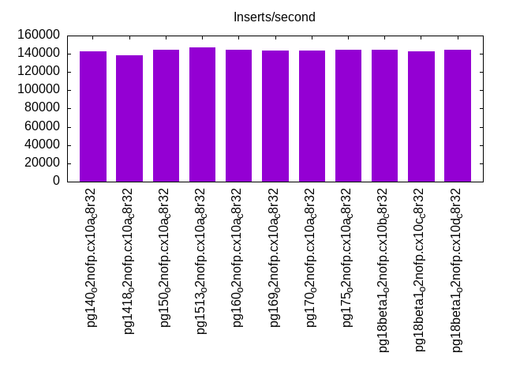
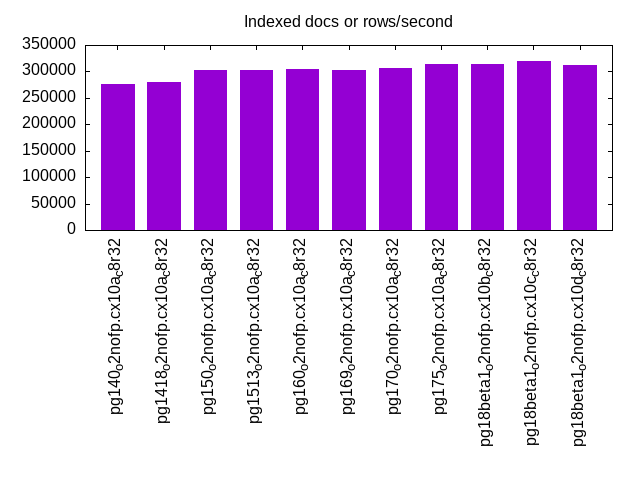
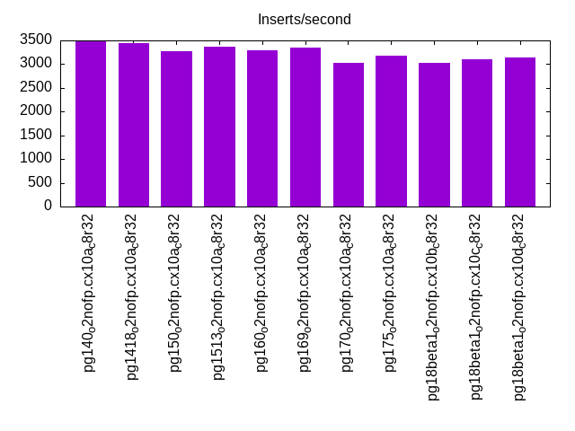
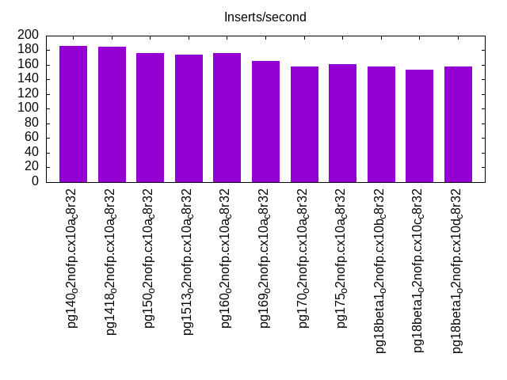
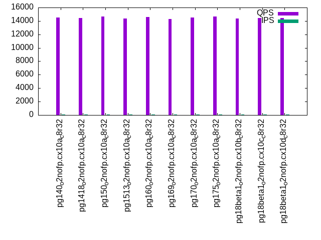
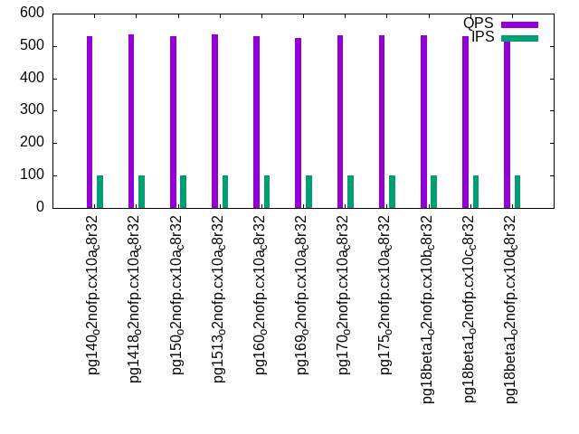
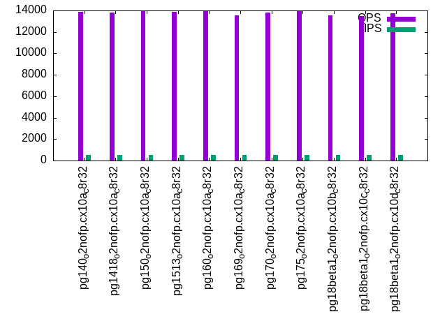
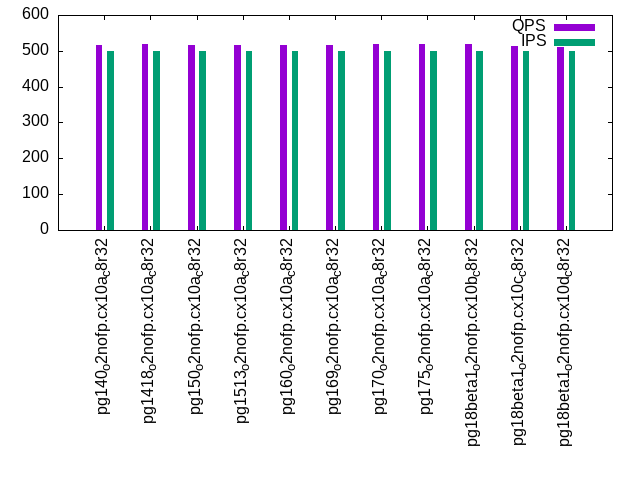
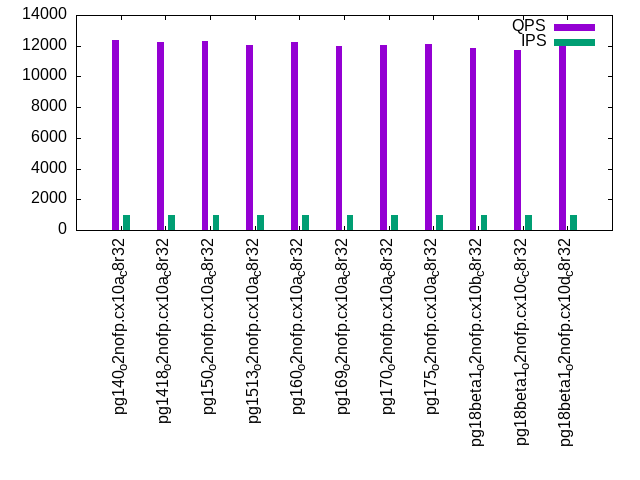
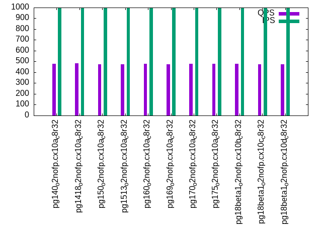

This is a report for the insert benchmark with 800M docs and 1 client(s). It is generated by scripts (bash, awk, sed) and Tufte might not be impressed. An overview of the insert benchmark is here and a short update is here. Below, by DBMS, I mean DBMS+version.config. An example is my8020.c10b40 where my means MySQL, 8020 is version 8.0.20 and c10b40 is the name for the configuration file.
The test server has 8 AMD cores, 32G RAM and an NVMe SSD. It is described here as the PN53. The benchmark was run with 1 client and there were 1 or 3 connections per client (1 for queries or inserts without rate limits, 1+1 for rate limited inserts+deletes). It uses 1 table. It loads 800M rows per table without secondary indexes, creates 3 secondary indexes per table, then inserts 4m+1m rows per table with a delete per insert to avoid growing the table. It then does 6 read+write tests for 1800s each that do queries as fast as possible with 100,100,500,500,1000,1000 inserts/s and the same for deletes/s per client concurrent with the queries. The database is larger than memory. Clients and the DBMS share one server. The per-database configs are in the per-database subdirectories here.
The tested DBMS are:
The numbers are inserts/s for l.i0, l.i1 and l.i2, indexed docs (or rows) /s for l.x and queries/s for qr100, qp100 thru qr1000, qp1000" The values are the average rate over the entire test for inserts (IPS) and queries (QPS). The range of values for IPS and QPS is split into 3 parts: bottom 25%, middle 50%, top 25%. Values in the bottom 25% have a red background, values in the top 25% have a green background and values in the middle have no color. A gray background is used for values that can be ignored because the DBMS did not sustain the target insert rate. Red backgrounds are not used when the minimum value is within 80% of the max value.
| dbms | l.i0 | l.x | l.i1 | l.i2 | qr100 | qp100 | qr500 | qp500 | qr1000 | qp1000 |
|---|---|---|---|---|---|---|---|---|---|---|
| pg140_o2nofp.cx10a_c8r32 | 142273 | 276052 | 3475 | 186 | 14541 | 529 | 13850 | 516 | 12356 | 480 |
| pg1418_o2nofp.cx10a_c8r32 | 138768 | 280505 | 3445 | 185 | 14471 | 536 | 13795 | 518 | 12239 | 482 |
| pg150_o2nofp.cx10a_c8r32 | 144639 | 303030 | 3271 | 176 | 14637 | 531 | 13940 | 516 | 12308 | 475 |
| pg1513_o2nofp.cx10a_c8r32 | 146762 | 303030 | 3370 | 174 | 14389 | 537 | 13846 | 516 | 12035 | 475 |
| pg160_o2nofp.cx10a_c8r32 | 144561 | 304646 | 3292 | 176 | 14576 | 531 | 13997 | 517 | 12212 | 477 |
| pg169_o2nofp.cx10a_c8r32 | 143190 | 303490 | 3358 | 165 | 14266 | 526 | 13524 | 516 | 11989 | 475 |
| pg170_o2nofp.cx10a_c8r32 | 143756 | 305927 | 3033 | 158 | 14540 | 534 | 13837 | 518 | 12017 | 481 |
| pg175_o2nofp.cx10a_c8r32 | 144613 | 313357 | 3170 | 161 | 14660 | 532 | 13906 | 518 | 12081 | 481 |
| pg18beta1_o2nofp.cx10b_c8r32 | 144404 | 314465 | 3021 | 158 | 14343 | 534 | 13556 | 518 | 11871 | 478 |
| pg18beta1_o2nofp.cx10c_c8r32 | 142857 | 320384 | 3108 | 154 | 14445 | 529 | 13466 | 513 | 11699 | 473 |
| pg18beta1_o2nofp.cx10d_c8r32 | 144092 | 312867 | 3142 | 158 | 14446 | 530 | 13708 | 512 | 11982 | 473 |
This table has relative throughput, throughput for the DBMS relative to the DBMS in the first line, using the absolute throughput from the previous table. Values less than 0.95 have a yellow background. Values greater than 1.05 have a blue background.
| dbms | l.i0 | l.x | l.i1 | l.i2 | qr100 | qp100 | qr500 | qp500 | qr1000 | qp1000 |
|---|---|---|---|---|---|---|---|---|---|---|
| pg140_o2nofp.cx10a_c8r32 | 1.00 | 1.00 | 1.00 | 1.00 | 1.00 | 1.00 | 1.00 | 1.00 | 1.00 | 1.00 |
| pg1418_o2nofp.cx10a_c8r32 | 0.98 | 1.02 | 0.99 | 0.99 | 1.00 | 1.01 | 1.00 | 1.00 | 0.99 | 1.00 |
| pg150_o2nofp.cx10a_c8r32 | 1.02 | 1.10 | 0.94 | 0.95 | 1.01 | 1.00 | 1.01 | 1.00 | 1.00 | 0.99 |
| pg1513_o2nofp.cx10a_c8r32 | 1.03 | 1.10 | 0.97 | 0.94 | 0.99 | 1.02 | 1.00 | 1.00 | 0.97 | 0.99 |
| pg160_o2nofp.cx10a_c8r32 | 1.02 | 1.10 | 0.95 | 0.95 | 1.00 | 1.00 | 1.01 | 1.00 | 0.99 | 0.99 |
| pg169_o2nofp.cx10a_c8r32 | 1.01 | 1.10 | 0.97 | 0.89 | 0.98 | 0.99 | 0.98 | 1.00 | 0.97 | 0.99 |
| pg170_o2nofp.cx10a_c8r32 | 1.01 | 1.11 | 0.87 | 0.85 | 1.00 | 1.01 | 1.00 | 1.00 | 0.97 | 1.00 |
| pg175_o2nofp.cx10a_c8r32 | 1.02 | 1.14 | 0.91 | 0.87 | 1.01 | 1.01 | 1.00 | 1.00 | 0.98 | 1.00 |
| pg18beta1_o2nofp.cx10b_c8r32 | 1.01 | 1.14 | 0.87 | 0.85 | 0.99 | 1.01 | 0.98 | 1.00 | 0.96 | 1.00 |
| pg18beta1_o2nofp.cx10c_c8r32 | 1.00 | 1.16 | 0.89 | 0.83 | 0.99 | 1.00 | 0.97 | 0.99 | 0.95 | 0.99 |
| pg18beta1_o2nofp.cx10d_c8r32 | 1.01 | 1.13 | 0.90 | 0.85 | 0.99 | 1.00 | 0.99 | 0.99 | 0.97 | 0.99 |
This lists the average rate of inserts/s for the tests that do inserts concurrent with queries. For such tests the query rate is listed in the table above. The read+write tests are setup so that the insert rate should match the target rate every second. Cells that are not at least 95% of the target have a red background to indicate a failure to satisfy the target.
| dbms | qr100.L1 | qp100.L2 | qr500.L3 | qp500.L4 | qr1000.L5 | qp1000.L6 |
|---|---|---|---|---|---|---|
| pg140_o2nofp.cx10a_c8r32 | 100 | 100 | 500 | 500 | 999 | 999 |
| pg1418_o2nofp.cx10a_c8r32 | 100 | 100 | 500 | 500 | 999 | 999 |
| pg150_o2nofp.cx10a_c8r32 | 100 | 100 | 500 | 500 | 999 | 999 |
| pg1513_o2nofp.cx10a_c8r32 | 100 | 100 | 500 | 500 | 999 | 999 |
| pg160_o2nofp.cx10a_c8r32 | 100 | 100 | 500 | 500 | 999 | 999 |
| pg169_o2nofp.cx10a_c8r32 | 100 | 100 | 500 | 500 | 999 | 999 |
| pg170_o2nofp.cx10a_c8r32 | 100 | 100 | 500 | 500 | 999 | 999 |
| pg175_o2nofp.cx10a_c8r32 | 100 | 100 | 500 | 500 | 999 | 999 |
| pg18beta1_o2nofp.cx10b_c8r32 | 100 | 100 | 500 | 500 | 999 | 999 |
| pg18beta1_o2nofp.cx10c_c8r32 | 100 | 100 | 500 | 500 | 999 | 999 |
| pg18beta1_o2nofp.cx10d_c8r32 | 100 | 100 | 500 | 500 | 999 | 999 |
| target | 100 | 100 | 500 | 500 | 1000 | 1000 |
l.i0: load without secondary indexes. Graphs for performance per 1-second interval are here.
Average throughput:
Insert response time histogram: each cell has the percentage of responses that take <= the time in the header and max is the max response time in seconds. For the max column values in the top 25% of the range have a red background and in the bottom 25% of the range have a green background. The red background is not used when the min value is within 80% of the max value.
| dbms | 256us | 1ms | 4ms | 16ms | 64ms | 256ms | 1s | 4s | 16s | gt | max |
|---|---|---|---|---|---|---|---|---|---|---|---|
| pg140_o2nofp.cx10a_c8r32 | 99.963 | 0.032 | 0.005 | 0.001 | 0.037 | ||||||
| pg1418_o2nofp.cx10a_c8r32 | 99.967 | 0.028 | 0.005 | 0.001 | 0.060 | ||||||
| pg150_o2nofp.cx10a_c8r32 | 99.888 | 0.098 | 0.012 | 0.002 | nonzero | 0.070 | |||||
| pg1513_o2nofp.cx10a_c8r32 | 99.973 | 0.023 | 0.003 | 0.002 | nonzero | 0.077 | |||||
| pg160_o2nofp.cx10a_c8r32 | 99.972 | 0.023 | 0.003 | 0.002 | 0.061 | ||||||
| pg169_o2nofp.cx10a_c8r32 | 99.967 | 0.027 | 0.004 | 0.002 | 0.048 | ||||||
| pg170_o2nofp.cx10a_c8r32 | 99.970 | 0.024 | 0.004 | 0.003 | 0.058 | ||||||
| pg175_o2nofp.cx10a_c8r32 | 99.974 | 0.021 | 0.003 | 0.001 | nonzero | 0.072 | |||||
| pg18beta1_o2nofp.cx10b_c8r32 | 99.972 | 0.023 | 0.004 | 0.001 | 0.040 | ||||||
| pg18beta1_o2nofp.cx10c_c8r32 | 99.837 | 0.155 | 0.006 | 0.002 | nonzero | 0.069 | |||||
| pg18beta1_o2nofp.cx10d_c8r32 | 99.968 | 0.026 | 0.005 | 0.001 | 0.047 |
Performance metrics for the DBMS listed above. Some are normalized by throughput, others are not. Legend for results is here.
ips qps rps rmbps wps wmbps rpq rkbpq wpi wkbpi csps cpups cspq cpupq dbgb1 dbgb2 rss maxop p50 p99 tag 142273 0 28 0.2 530.2 58.6 0.000 0.002 0.004 0.422 16737 20.5 0.118 12 76.5 116.6 20.0 0.037 142283 139380 pg140_o2nofp.cx10a_c8r32 138768 0 25 0.2 523.3 57.2 0.000 0.001 0.004 0.422 16284 20.0 0.117 12 76.5 116.6 7.6 0.060 138684 135981 pg1418_o2nofp.cx10a_c8r32 144639 0 27 0.2 541.9 59.5 0.000 0.001 0.004 0.421 17081 20.6 0.118 11 76.5 116.6 0.8 0.070 145680 124483 pg150_o2nofp.cx10a_c8r32 146762 0 28 0.2 549.6 60.3 0.000 0.002 0.004 0.421 17131 20.7 0.117 11 76.5 116.6 2.2 0.077 146783 143480 pg1513_o2nofp.cx10a_c8r32 144561 0 26 0.2 542.9 59.6 0.000 0.001 0.004 0.422 16865 20.6 0.117 11 76.5 116.6 18.9 0.061 144982 141281 pg160_o2nofp.cx10a_c8r32 143190 0 26 0.2 535.7 59.1 0.000 0.001 0.004 0.423 16710 20.4 0.117 11 76.5 116.6 18.1 0.048 143672 140380 pg169_o2nofp.cx10a_c8r32 143756 0 25 0.2 539.0 59.5 0.000 0.001 0.004 0.424 14352 20.5 0.100 11 76.5 116.6 18.5 0.058 144284 140980 pg170_o2nofp.cx10a_c8r32 144613 0 25 0.2 540.5 59.4 0.000 0.001 0.004 0.421 14417 20.5 0.100 11 76.5 116.6 18.2 0.072 145480 140883 pg175_o2nofp.cx10a_c8r32 144404 0 25 0.2 539.0 59.3 0.000 0.001 0.004 0.421 14394 20.4 0.100 11 76.5 116.6 18.4 0.040 145282 140780 pg18beta1_o2nofp.cx10b_c8r32 142857 0 24 0.2 532.2 58.5 0.000 0.001 0.004 0.419 14651 20.7 0.103 12 76.5 116.6 18.5 0.069 143081 132682 pg18beta1_o2nofp.cx10c_c8r32 144092 0 26 0.2 540.4 59.4 0.000 0.001 0.004 0.422 14461 20.5 0.100 11 76.5 116.6 18.9 0.047 144982 140681 pg18beta1_o2nofp.cx10d_c8r32
l.x: create secondary indexes.
Average throughput:
Performance metrics for the DBMS listed above. Some are normalized by throughput, others are not. Legend for results is here.
ips qps rps rmbps wps wmbps rpq rkbpq wpi wkbpi csps cpups cspq cpupq dbgb1 dbgb2 rss maxop p50 p99 tag 276052 0 731 90.6 841.6 100.9 0.003 0.336 0.003 0.374 367 12.9 0.001 4 153.6 193.7 23.4 0.004 NA NA pg140_o2nofp.cx10a_c8r32 280505 0 742 92.1 860.2 102.4 0.003 0.336 0.003 0.374 375 12.9 0.001 4 153.6 193.7 23.4 0.005 NA NA pg1418_o2nofp.cx10a_c8r32 303030 0 834 101.9 958.8 113.2 0.003 0.344 0.003 0.383 425 12.9 0.001 3 153.6 193.7 23.4 0.003 NA NA pg150_o2nofp.cx10a_c8r32 303030 0 824 102.1 955.3 113.2 0.003 0.345 0.003 0.382 451 12.9 0.001 3 153.6 193.7 23.4 0.002 NA NA pg1513_o2nofp.cx10a_c8r32 304646 0 826 102.6 958.7 114.0 0.003 0.345 0.003 0.383 454 12.9 0.001 3 153.6 193.7 23.5 0.004 NA NA pg160_o2nofp.cx10a_c8r32 303490 0 823 102.2 956.0 113.7 0.003 0.345 0.003 0.384 447 12.9 0.001 3 153.6 193.7 23.5 0.003 NA NA pg169_o2nofp.cx10a_c8r32 305927 0 828 102.9 968.2 114.0 0.003 0.344 0.003 0.382 353 13.0 0.001 3 153.6 193.7 23.4 0.002 NA NA pg170_o2nofp.cx10a_c8r32 313357 0 849 105.5 998.0 116.9 0.003 0.345 0.003 0.382 474 12.9 0.002 3 153.6 193.7 23.4 0.004 NA NA pg175_o2nofp.cx10a_c8r32 314465 0 852 105.9 1001.6 117.1 0.003 0.345 0.003 0.381 449 13.0 0.001 3 153.6 193.7 23.4 0.005 NA NA pg18beta1_o2nofp.cx10b_c8r32 320384 0 868 107.8 1010.4 119.7 0.003 0.345 0.003 0.382 1270 13.4 0.004 3 153.6 193.7 23.4 0.003 NA NA pg18beta1_o2nofp.cx10c_c8r32 312867 0 848 105.3 996.8 116.8 0.003 0.345 0.003 0.382 999 13.4 0.003 3 153.6 193.7 23.4 0.003 NA NA pg18beta1_o2nofp.cx10d_c8r32
l.i1: continue load after secondary indexes created with 50 inserts per transaction. Graphs for performance per 1-second interval are here.
Average throughput:
Insert response time histogram: each cell has the percentage of responses that take <= the time in the header and max is the max response time in seconds. For the max column values in the top 25% of the range have a red background and in the bottom 25% of the range have a green background. The red background is not used when the min value is within 80% of the max value.
| dbms | 256us | 1ms | 4ms | 16ms | 64ms | 256ms | 1s | 4s | 16s | gt | max |
|---|---|---|---|---|---|---|---|---|---|---|---|
| pg140_o2nofp.cx10a_c8r32 | 98.296 | 1.702 | 0.001 | 0.072 | |||||||
| pg1418_o2nofp.cx10a_c8r32 | 98.259 | 1.741 | 0.050 | ||||||||
| pg150_o2nofp.cx10a_c8r32 | 98.394 | 1.606 | 0.050 | ||||||||
| pg1513_o2nofp.cx10a_c8r32 | 98.338 | 1.663 | 0.053 | ||||||||
| pg160_o2nofp.cx10a_c8r32 | 98.483 | 1.517 | 0.055 | ||||||||
| pg169_o2nofp.cx10a_c8r32 | 98.421 | 1.579 | 0.052 | ||||||||
| pg170_o2nofp.cx10a_c8r32 | 98.601 | 1.399 | 0.050 | ||||||||
| pg175_o2nofp.cx10a_c8r32 | 98.449 | 1.551 | 0.058 | ||||||||
| pg18beta1_o2nofp.cx10b_c8r32 | 98.419 | 1.581 | 0.059 | ||||||||
| pg18beta1_o2nofp.cx10c_c8r32 | 98.323 | 1.678 | 0.054 | ||||||||
| pg18beta1_o2nofp.cx10d_c8r32 | 98.442 | 1.558 | 0.055 |
Delete response time histogram: each cell has the percentage of responses that take <= the time in the header and max is the max response time in seconds. For the max column values in the top 25% of the range have a red background and in the bottom 25% of the range have a green background. The red background is not used when the min value is within 80% of the max value.
| dbms | 256us | 1ms | 4ms | 16ms | 64ms | 256ms | 1s | 4s | 16s | gt | max |
|---|---|---|---|---|---|---|---|---|---|---|---|
| pg140_o2nofp.cx10a_c8r32 | 0.411 | 16.625 | 51.020 | 31.944 | 0.032 | ||||||
| pg1418_o2nofp.cx10a_c8r32 | 0.771 | 16.474 | 50.361 | 32.394 | 0.031 | ||||||
| pg150_o2nofp.cx10a_c8r32 | 0.424 | 15.363 | 48.509 | 35.705 | 0.029 | ||||||
| pg1513_o2nofp.cx10a_c8r32 | 0.419 | 15.585 | 45.519 | 38.477 | 0.030 | ||||||
| pg160_o2nofp.cx10a_c8r32 | 0.323 | 16.511 | 44.464 | 38.703 | 0.030 | ||||||
| pg169_o2nofp.cx10a_c8r32 | 0.504 | 16.212 | 45.129 | 38.155 | 0.030 | ||||||
| pg170_o2nofp.cx10a_c8r32 | 0.476 | 15.440 | 39.611 | 44.472 | 0.037 | ||||||
| pg175_o2nofp.cx10a_c8r32 | 0.429 | 16.102 | 43.014 | 40.455 | 0.033 | ||||||
| pg18beta1_o2nofp.cx10b_c8r32 | 0.511 | 15.054 | 38.488 | 45.948 | 0.034 | ||||||
| pg18beta1_o2nofp.cx10c_c8r32 | 1.014 | 14.866 | 41.444 | 42.676 | 0.033 | ||||||
| pg18beta1_o2nofp.cx10d_c8r32 | 0.573 | 15.326 | 42.014 | 42.087 | 0.033 |
Performance metrics for the DBMS listed above. Some are normalized by throughput, others are not. Legend for results is here.
ips qps rps rmbps wps wmbps rpq rkbpq wpi wkbpi csps cpups cspq cpupq dbgb1 dbgb2 rss maxop p50 p99 tag 3475 0 4990 39.5 4123.4 70.5 1.436 11.634 1.187 20.774 11453 15.6 3.296 359 154.3 194.3 23.0 0.072 3300 2100 pg140_o2nofp.cx10a_c8r32 3445 0 4950 39.2 4086.5 69.8 1.437 11.646 1.186 20.748 11340 15.5 3.292 360 154.3 194.3 23.0 0.050 3299 2000 pg1418_o2nofp.cx10a_c8r32 3271 0 4704 37.2 3908.6 66.8 1.438 11.661 1.195 20.928 10748 15.4 3.286 377 154.3 194.3 22.8 0.050 3100 1900 pg150_o2nofp.cx10a_c8r32 3370 0 4845 38.4 4031.3 69.0 1.438 11.656 1.196 20.959 11042 15.4 3.277 366 154.3 194.3 22.8 0.053 3000 2050 pg1513_o2nofp.cx10a_c8r32 3292 0 4727 37.4 3902.8 66.7 1.436 11.638 1.185 20.750 10790 15.3 3.277 372 154.3 194.3 23.0 0.055 2900 1800 pg160_o2nofp.cx10a_c8r32 3358 0 4824 38.2 3965.5 67.7 1.436 11.642 1.181 20.634 11044 15.5 3.288 369 154.3 194.3 23.1 0.052 2950 1800 pg169_o2nofp.cx10a_c8r32 3033 0 4362 34.5 3597.8 61.4 1.438 11.660 1.186 20.735 9844 15.1 3.246 398 154.3 194.3 22.9 0.050 2650 1750 pg170_o2nofp.cx10a_c8r32 3170 0 4558 36.1 3791.7 64.9 1.438 11.659 1.196 20.968 10262 15.0 3.238 379 154.3 194.3 22.7 0.058 2650 1850 pg175_o2nofp.cx10a_c8r32 3021 0 4347 34.4 3622.3 62.0 1.439 11.667 1.199 21.008 9796 14.9 3.243 395 154.3 194.3 22.9 0.059 2600 1550 pg18beta1_o2nofp.cx10b_c8r32 3108 0 4469 35.4 3721.0 63.9 1.438 11.657 1.197 21.068 10063 15.0 3.238 386 154.3 194.3 23.0 0.054 2749 1750 pg18beta1_o2nofp.cx10c_c8r32 3142 0 4519 35.8 3742.2 63.9 1.438 11.654 1.191 20.827 10167 14.9 3.236 379 154.3 194.3 22.9 0.055 2600 1800 pg18beta1_o2nofp.cx10d_c8r32
l.i2: continue load after secondary indexes created with 5 inserts per transaction. Graphs for performance per 1-second interval are here.
Average throughput:
Insert response time histogram: each cell has the percentage of responses that take <= the time in the header and max is the max response time in seconds. For the max column values in the top 25% of the range have a red background and in the bottom 25% of the range have a green background. The red background is not used when the min value is within 80% of the max value.
| dbms | 256us | 1ms | 4ms | 16ms | 64ms | 256ms | 1s | 4s | 16s | gt | max |
|---|---|---|---|---|---|---|---|---|---|---|---|
| pg140_o2nofp.cx10a_c8r32 | 6.990 | 92.678 | 0.323 | 0.009 | 0.035 | ||||||
| pg1418_o2nofp.cx10a_c8r32 | 6.926 | 92.741 | 0.329 | 0.004 | 0.023 | ||||||
| pg150_o2nofp.cx10a_c8r32 | 7.421 | 92.210 | 0.361 | 0.007 | 0.021 | ||||||
| pg1513_o2nofp.cx10a_c8r32 | 6.992 | 92.626 | 0.373 | 0.009 | 0.023 | ||||||
| pg160_o2nofp.cx10a_c8r32 | 7.101 | 92.616 | 0.275 | 0.008 | 0.033 | ||||||
| pg169_o2nofp.cx10a_c8r32 | 6.834 | 92.853 | 0.304 | 0.008 | 0.032 | ||||||
| pg170_o2nofp.cx10a_c8r32 | 11.276 | 88.670 | 0.050 | 0.003 | 0.037 | ||||||
| pg175_o2nofp.cx10a_c8r32 | 10.545 | 89.403 | 0.048 | 0.004 | 0.025 | ||||||
| pg18beta1_o2nofp.cx10b_c8r32 | 9.489 | 90.456 | 0.052 | 0.003 | 0.027 | ||||||
| pg18beta1_o2nofp.cx10c_c8r32 | 10.748 | 89.200 | 0.050 | 0.003 | 0.036 | ||||||
| pg18beta1_o2nofp.cx10d_c8r32 | 10.649 | 89.303 | 0.047 | 0.002 | 0.022 |
Delete response time histogram: each cell has the percentage of responses that take <= the time in the header and max is the max response time in seconds. For the max column values in the top 25% of the range have a red background and in the bottom 25% of the range have a green background. The red background is not used when the min value is within 80% of the max value.
| dbms | 256us | 1ms | 4ms | 16ms | 64ms | 256ms | 1s | 4s | 16s | gt | max |
|---|---|---|---|---|---|---|---|---|---|---|---|
| pg140_o2nofp.cx10a_c8r32 | 99.999 | 0.001 | 0.099 | ||||||||
| pg1418_o2nofp.cx10a_c8r32 | 99.999 | 0.001 | 0.100 | ||||||||
| pg150_o2nofp.cx10a_c8r32 | 99.999 | 0.001 | 0.101 | ||||||||
| pg1513_o2nofp.cx10a_c8r32 | 99.999 | 0.001 | 0.097 | ||||||||
| pg160_o2nofp.cx10a_c8r32 | 99.999 | 0.001 | 0.098 | ||||||||
| pg169_o2nofp.cx10a_c8r32 | 99.999 | 0.001 | 0.098 | ||||||||
| pg170_o2nofp.cx10a_c8r32 | 99.999 | 0.001 | 0.097 | ||||||||
| pg175_o2nofp.cx10a_c8r32 | 99.999 | 0.001 | 0.097 | ||||||||
| pg18beta1_o2nofp.cx10b_c8r32 | 99.999 | 0.001 | 0.101 | ||||||||
| pg18beta1_o2nofp.cx10c_c8r32 | 99.999 | 0.001 | 0.102 | ||||||||
| pg18beta1_o2nofp.cx10d_c8r32 | 99.999 | 0.001 | 0.104 |
Performance metrics for the DBMS listed above. Some are normalized by throughput, others are not. Legend for results is here.
ips qps rps rmbps wps wmbps rpq rkbpq wpi wkbpi csps cpups cspq cpupq dbgb1 dbgb2 rss maxop p50 p99 tag 186 0 203 2.1 547.0 8.6 1.095 11.643 2.944 47.192 1451 13.1 7.810 5640 154.5 194.5 3.1 0.035 185 160 pg140_o2nofp.cx10a_c8r32 185 0 199 1.6 535.3 7.3 1.072 8.766 2.889 40.575 1426 13.1 7.697 5656 154.5 194.5 23.3 0.023 185 160 pg1418_o2nofp.cx10a_c8r32 176 0 188 1.5 506.6 7.0 1.072 8.763 2.887 41.073 1297 12.9 7.391 5880 154.4 194.5 23.3 0.021 175 140 pg150_o2nofp.cx10a_c8r32 174 0 186 1.5 500.9 7.0 1.073 8.779 2.884 41.118 1304 12.9 7.505 5941 154.4 194.5 23.3 0.023 175 145 pg1513_o2nofp.cx10a_c8r32 176 0 189 1.5 509.0 7.1 1.073 8.775 2.887 41.104 1314 12.9 7.456 5854 154.4 194.5 23.3 0.033 175 145 pg160_o2nofp.cx10a_c8r32 165 0 177 1.4 487.1 6.8 1.072 8.768 2.945 41.798 1246 12.9 7.531 6239 154.4 194.5 23.3 0.032 165 135 pg169_o2nofp.cx10a_c8r32 158 0 169 1.4 463.9 6.5 1.071 8.759 2.933 41.859 1090 12.8 6.893 6473 154.4 191.7 23.4 0.037 160 130 pg170_o2nofp.cx10a_c8r32 161 0 172 1.4 471.0 6.6 1.072 8.770 2.929 41.733 1109 12.8 6.898 6368 154.4 194.5 23.4 0.025 160 135 pg175_o2nofp.cx10a_c8r32 158 0 170 1.4 465.6 6.5 1.072 8.768 2.939 41.885 1084 12.8 6.841 6465 154.4 191.4 23.4 0.027 160 125 pg18beta1_o2nofp.cx10b_c8r32 154 0 164 1.3 450.5 6.3 1.072 8.761 2.935 41.769 1061 12.8 6.912 6671 154.5 191.4 23.3 0.036 155 120 pg18beta1_o2nofp.cx10c_c8r32 158 0 169 1.3 465.3 6.5 1.072 8.764 2.951 42.065 1086 12.8 6.885 6493 154.4 191.6 23.4 0.022 155 125 pg18beta1_o2nofp.cx10d_c8r32
qr100.L1: range queries with 100 insert/s per client. Graphs for performance per 1-second interval are here.
Average throughput:
Query response time histogram: each cell has the percentage of responses that take <= the time in the header and max is the max response time in seconds. For max values in the top 25% of the range have a red background and in the bottom 25% of the range have a green background. The red background is not used when the min value is within 80% of the max value.
| dbms | 256us | 1ms | 4ms | 16ms | 64ms | 256ms | 1s | 4s | 16s | gt | max |
|---|---|---|---|---|---|---|---|---|---|---|---|
| pg140_o2nofp.cx10a_c8r32 | 99.994 | 0.006 | nonzero | nonzero | 0.009 | ||||||
| pg1418_o2nofp.cx10a_c8r32 | 99.996 | 0.004 | nonzero | nonzero | 0.010 | ||||||
| pg150_o2nofp.cx10a_c8r32 | 99.996 | 0.003 | nonzero | nonzero | 0.010 | ||||||
| pg1513_o2nofp.cx10a_c8r32 | 99.996 | 0.004 | nonzero | nonzero | 0.009 | ||||||
| pg160_o2nofp.cx10a_c8r32 | 99.996 | 0.003 | nonzero | nonzero | 0.009 | ||||||
| pg169_o2nofp.cx10a_c8r32 | 99.996 | 0.003 | nonzero | nonzero | 0.010 | ||||||
| pg170_o2nofp.cx10a_c8r32 | 99.997 | 0.003 | nonzero | nonzero | 0.009 | ||||||
| pg175_o2nofp.cx10a_c8r32 | 99.997 | 0.003 | nonzero | nonzero | 0.009 | ||||||
| pg18beta1_o2nofp.cx10b_c8r32 | 99.996 | 0.003 | nonzero | nonzero | 0.010 | ||||||
| pg18beta1_o2nofp.cx10c_c8r32 | 99.996 | 0.003 | nonzero | nonzero | 0.010 | ||||||
| pg18beta1_o2nofp.cx10d_c8r32 | 99.996 | 0.003 | nonzero | nonzero | 0.010 |
Insert response time histogram: each cell has the percentage of responses that take <= the time in the header and max is the max response time in seconds. For max values in the top 25% of the range have a red background and in the bottom 25% of the range have a green background. The red background is not used when the min value is within 80% of the max value.
| dbms | 256us | 1ms | 4ms | 16ms | 64ms | 256ms | 1s | 4s | 16s | gt | max |
|---|---|---|---|---|---|---|---|---|---|---|---|
| pg140_o2nofp.cx10a_c8r32 | 56.806 | 43.194 | 0.023 | ||||||||
| pg1418_o2nofp.cx10a_c8r32 | 59.694 | 40.306 | 0.025 | ||||||||
| pg150_o2nofp.cx10a_c8r32 | 56.083 | 43.917 | 0.025 | ||||||||
| pg1513_o2nofp.cx10a_c8r32 | 55.361 | 44.639 | 0.025 | ||||||||
| pg160_o2nofp.cx10a_c8r32 | 55.917 | 44.083 | 0.026 | ||||||||
| pg169_o2nofp.cx10a_c8r32 | 55.556 | 44.444 | 0.026 | ||||||||
| pg170_o2nofp.cx10a_c8r32 | 60.278 | 39.722 | 0.026 | ||||||||
| pg175_o2nofp.cx10a_c8r32 | 60.000 | 40.000 | 0.024 | ||||||||
| pg18beta1_o2nofp.cx10b_c8r32 | 60.361 | 39.639 | 0.024 | ||||||||
| pg18beta1_o2nofp.cx10c_c8r32 | 60.889 | 39.111 | 0.026 | ||||||||
| pg18beta1_o2nofp.cx10d_c8r32 | 59.944 | 40.056 | 0.026 |
Delete response time histogram: each cell has the percentage of responses that take <= the time in the header and max is the max response time in seconds. For max values in the top 25% of the range have a red background and in the bottom 25% of the range have a green background. The red background is not used when the min value is within 80% of the max value.
| dbms | 256us | 1ms | 4ms | 16ms | 64ms | 256ms | 1s | 4s | 16s | gt | max |
|---|---|---|---|---|---|---|---|---|---|---|---|
| pg140_o2nofp.cx10a_c8r32 | 51.889 | 48.056 | 0.056 | 0.010 | |||||||
| pg1418_o2nofp.cx10a_c8r32 | 51.389 | 48.528 | 0.083 | 0.010 | |||||||
| pg150_o2nofp.cx10a_c8r32 | 50.333 | 49.556 | 0.111 | 0.010 | |||||||
| pg1513_o2nofp.cx10a_c8r32 | 53.667 | 46.250 | 0.083 | 0.010 | |||||||
| pg160_o2nofp.cx10a_c8r32 | 51.722 | 48.222 | 0.056 | 0.010 | |||||||
| pg169_o2nofp.cx10a_c8r32 | 44.833 | 55.111 | 0.056 | 0.010 | |||||||
| pg170_o2nofp.cx10a_c8r32 | 51.111 | 48.806 | 0.083 | 0.010 | |||||||
| pg175_o2nofp.cx10a_c8r32 | 44.917 | 55.000 | 0.083 | 0.010 | |||||||
| pg18beta1_o2nofp.cx10b_c8r32 | 48.444 | 51.500 | 0.056 | 0.010 | |||||||
| pg18beta1_o2nofp.cx10c_c8r32 | 51.306 | 48.611 | 0.083 | 0.010 | |||||||
| pg18beta1_o2nofp.cx10d_c8r32 | 45.083 | 54.833 | 0.083 | 0.010 |
Performance metrics for the DBMS listed above. Some are normalized by throughput, others are not. Legend for results is here.
ips qps rps rmbps wps wmbps rpq rkbpq wpi wkbpi csps cpups cspq cpupq dbgb1 dbgb2 rss maxop p50 p99 tag 100 14541 112 0.9 48.5 1.7 0.008 0.066 0.485 17.778 55824 12.4 3.839 68 154.5 192.5 23.3 0.009 14526 14254 pg140_o2nofp.cx10a_c8r32 100 14471 112 0.9 45.4 1.7 0.008 0.066 0.454 17.504 55549 12.5 3.839 69 154.5 192.2 23.3 0.010 14478 14238 pg1418_o2nofp.cx10a_c8r32 100 14637 111 0.9 44.9 1.7 0.008 0.065 0.449 17.424 56121 12.4 3.834 68 154.5 191.7 23.3 0.010 14622 14446 pg150_o2nofp.cx10a_c8r32 100 14389 111 0.9 42.1 1.7 0.008 0.066 0.421 17.188 55176 12.5 3.835 69 154.5 191.7 23.3 0.009 14398 14126 pg1513_o2nofp.cx10a_c8r32 100 14576 111 0.9 44.0 1.7 0.008 0.065 0.440 17.360 55919 12.4 3.836 68 154.5 192.4 23.3 0.009 14574 14302 pg160_o2nofp.cx10a_c8r32 100 14266 112 0.9 39.5 1.7 0.008 0.067 0.395 16.972 54739 12.6 3.837 71 154.5 193.3 23.3 0.010 14254 14030 pg169_o2nofp.cx10a_c8r32 100 14540 112 0.9 64.4 1.9 0.008 0.066 0.644 19.202 55740 12.6 3.834 69 154.5 190.7 23.4 0.009 14558 14286 pg170_o2nofp.cx10a_c8r32 100 14660 112 0.9 64.7 1.9 0.008 0.065 0.647 19.241 56201 12.4 3.834 68 154.5 192.2 23.4 0.009 14654 14414 pg175_o2nofp.cx10a_c8r32 100 14343 111 0.9 65.3 1.9 0.008 0.065 0.653 19.290 55024 12.6 3.836 70 154.5 192.1 23.4 0.010 14334 14094 pg18beta1_o2nofp.cx10b_c8r32 100 14445 112 0.9 67.0 1.9 0.008 0.064 0.670 19.435 55381 12.5 3.834 69 154.5 189.9 23.4 0.010 14446 14174 pg18beta1_o2nofp.cx10c_c8r32 100 14446 111 0.9 66.3 1.9 0.008 0.064 0.664 19.391 55417 12.6 3.836 70 154.5 193.1 23.4 0.010 14430 14206 pg18beta1_o2nofp.cx10d_c8r32
qp100.L2: point queries with 100 insert/s per client. Graphs for performance per 1-second interval are here.
Average throughput:
Query response time histogram: each cell has the percentage of responses that take <= the time in the header and max is the max response time in seconds. For max values in the top 25% of the range have a red background and in the bottom 25% of the range have a green background. The red background is not used when the min value is within 80% of the max value.
| dbms | 256us | 1ms | 4ms | 16ms | 64ms | 256ms | 1s | 4s | 16s | gt | max |
|---|---|---|---|---|---|---|---|---|---|---|---|
| pg140_o2nofp.cx10a_c8r32 | 0.643 | 99.326 | 0.021 | 0.009 | 0.021 | ||||||
| pg1418_o2nofp.cx10a_c8r32 | 0.789 | 99.200 | 0.011 | 0.008 | |||||||
| pg150_o2nofp.cx10a_c8r32 | 0.698 | 99.290 | 0.012 | 0.008 | |||||||
| pg1513_o2nofp.cx10a_c8r32 | 0.810 | 99.179 | 0.011 | 0.007 | |||||||
| pg160_o2nofp.cx10a_c8r32 | 0.737 | 99.252 | 0.011 | 0.008 | |||||||
| pg169_o2nofp.cx10a_c8r32 | 0.642 | 99.341 | 0.018 | 0.008 | |||||||
| pg170_o2nofp.cx10a_c8r32 | 0.778 | 99.210 | 0.011 | 0.011 | |||||||
| pg175_o2nofp.cx10a_c8r32 | 0.724 | 99.266 | 0.010 | 0.007 | |||||||
| pg18beta1_o2nofp.cx10b_c8r32 | 0.777 | 99.211 | 0.012 | 0.008 | |||||||
| pg18beta1_o2nofp.cx10c_c8r32 | 0.720 | 99.268 | 0.012 | 0.007 | |||||||
| pg18beta1_o2nofp.cx10d_c8r32 | 0.783 | 99.206 | 0.011 | 0.007 |
Insert response time histogram: each cell has the percentage of responses that take <= the time in the header and max is the max response time in seconds. For max values in the top 25% of the range have a red background and in the bottom 25% of the range have a green background. The red background is not used when the min value is within 80% of the max value.
| dbms | 256us | 1ms | 4ms | 16ms | 64ms | 256ms | 1s | 4s | 16s | gt | max |
|---|---|---|---|---|---|---|---|---|---|---|---|
| pg140_o2nofp.cx10a_c8r32 | 91.750 | 8.250 | 0.027 | ||||||||
| pg1418_o2nofp.cx10a_c8r32 | 92.278 | 7.722 | 0.021 | ||||||||
| pg150_o2nofp.cx10a_c8r32 | 93.000 | 7.000 | 0.023 | ||||||||
| pg1513_o2nofp.cx10a_c8r32 | 92.417 | 7.583 | 0.020 | ||||||||
| pg160_o2nofp.cx10a_c8r32 | 91.361 | 8.639 | 0.024 | ||||||||
| pg169_o2nofp.cx10a_c8r32 | 93.028 | 6.972 | 0.020 | ||||||||
| pg170_o2nofp.cx10a_c8r32 | 99.583 | 0.417 | 0.024 | ||||||||
| pg175_o2nofp.cx10a_c8r32 | 99.472 | 0.528 | 0.019 | ||||||||
| pg18beta1_o2nofp.cx10b_c8r32 | 99.444 | 0.556 | 0.019 | ||||||||
| pg18beta1_o2nofp.cx10c_c8r32 | 99.444 | 0.556 | 0.020 | ||||||||
| pg18beta1_o2nofp.cx10d_c8r32 | 99.556 | 0.444 | 0.019 |
Delete response time histogram: each cell has the percentage of responses that take <= the time in the header and max is the max response time in seconds. For max values in the top 25% of the range have a red background and in the bottom 25% of the range have a green background. The red background is not used when the min value is within 80% of the max value.
| dbms | 256us | 1ms | 4ms | 16ms | 64ms | 256ms | 1s | 4s | 16s | gt | max |
|---|---|---|---|---|---|---|---|---|---|---|---|
| pg140_o2nofp.cx10a_c8r32 | 99.861 | 0.139 | 0.010 | ||||||||
| pg1418_o2nofp.cx10a_c8r32 | 99.972 | 0.028 | 0.008 | ||||||||
| pg150_o2nofp.cx10a_c8r32 | 99.972 | 0.028 | 0.009 | ||||||||
| pg1513_o2nofp.cx10a_c8r32 | 0.028 | 99.944 | 0.028 | 0.009 | |||||||
| pg160_o2nofp.cx10a_c8r32 | 99.972 | 0.028 | 0.008 | ||||||||
| pg169_o2nofp.cx10a_c8r32 | 99.972 | 0.028 | 0.008 | ||||||||
| pg170_o2nofp.cx10a_c8r32 | 99.972 | 0.028 | 0.008 | ||||||||
| pg175_o2nofp.cx10a_c8r32 | 99.222 | 0.778 | 0.008 | ||||||||
| pg18beta1_o2nofp.cx10b_c8r32 | 99.972 | 0.028 | 0.008 | ||||||||
| pg18beta1_o2nofp.cx10c_c8r32 | 97.750 | 2.250 | 0.009 | ||||||||
| pg18beta1_o2nofp.cx10d_c8r32 | 99.972 | 0.028 | 0.009 |
Performance metrics for the DBMS listed above. Some are normalized by throughput, others are not. Legend for results is here.
ips qps rps rmbps wps wmbps rpq rkbpq wpi wkbpi csps cpups cspq cpupq dbgb1 dbgb2 rss maxop p50 p99 tag 100 529 6909 54.3 369.2 4.2 13.062 105.120 3.696 43.480 15624 4.0 29.540 605 154.5 192.5 23.3 0.021 544 368 pg140_o2nofp.cx10a_c8r32 100 536 6991 55.0 372.1 4.3 13.050 105.064 3.725 43.678 15804 3.7 29.502 553 154.5 192.3 23.3 0.008 560 368 pg1418_o2nofp.cx10a_c8r32 100 531 6952 54.7 368.4 4.2 13.103 105.522 3.688 43.356 15646 3.6 29.487 543 154.5 191.7 23.3 0.008 544 368 pg150_o2nofp.cx10a_c8r32 100 537 6999 55.0 371.7 4.3 13.043 105.003 3.717 43.576 15752 3.7 29.354 552 154.5 191.7 23.3 0.007 560 368 pg1513_o2nofp.cx10a_c8r32 100 531 6935 54.5 369.3 4.2 13.055 105.082 3.697 43.430 15611 3.7 29.388 557 154.5 192.4 23.3 0.008 560 352 pg160_o2nofp.cx10a_c8r32 100 526 6876 54.1 373.9 4.3 13.060 105.152 3.743 43.798 15478 3.7 29.397 562 154.5 193.3 23.3 0.008 544 352 pg169_o2nofp.cx10a_c8r32 100 534 6962 54.7 346.4 4.1 13.038 104.959 3.464 41.574 15666 3.7 29.337 554 154.5 190.7 23.4 0.011 560 368 pg170_o2nofp.cx10a_c8r32 100 532 6939 54.6 345.9 4.1 13.046 105.026 3.459 41.571 15612 3.6 29.351 541 154.5 192.3 23.4 0.007 560 368 pg175_o2nofp.cx10a_c8r32 100 534 6957 54.7 345.6 4.1 13.037 104.962 3.456 41.526 15655 3.7 29.339 555 154.5 192.1 23.4 0.008 560 368 pg18beta1_o2nofp.cx10b_c8r32 100 529 6938 54.5 343.9 4.0 13.106 105.501 3.439 41.408 15603 3.7 29.473 559 154.5 189.9 23.4 0.007 560 352 pg18beta1_o2nofp.cx10c_c8r32 100 530 6911 54.3 344.3 4.0 13.043 104.957 3.443 41.452 15550 3.7 29.346 559 154.5 193.1 23.4 0.007 560 352 pg18beta1_o2nofp.cx10d_c8r32
qr500.L3: range queries with 500 insert/s per client. Graphs for performance per 1-second interval are here.
Average throughput:
Query response time histogram: each cell has the percentage of responses that take <= the time in the header and max is the max response time in seconds. For max values in the top 25% of the range have a red background and in the bottom 25% of the range have a green background. The red background is not used when the min value is within 80% of the max value.
| dbms | 256us | 1ms | 4ms | 16ms | 64ms | 256ms | 1s | 4s | 16s | gt | max |
|---|---|---|---|---|---|---|---|---|---|---|---|
| pg140_o2nofp.cx10a_c8r32 | 99.981 | 0.018 | nonzero | nonzero | nonzero | 0.017 | |||||
| pg1418_o2nofp.cx10a_c8r32 | 99.983 | 0.016 | nonzero | nonzero | nonzero | 0.033 | |||||
| pg150_o2nofp.cx10a_c8r32 | 99.983 | 0.017 | nonzero | nonzero | nonzero | 0.042 | |||||
| pg1513_o2nofp.cx10a_c8r32 | 99.982 | 0.017 | nonzero | 0.001 | nonzero | 0.031 | |||||
| pg160_o2nofp.cx10a_c8r32 | 99.982 | 0.017 | nonzero | 0.001 | nonzero | 0.045 | |||||
| pg169_o2nofp.cx10a_c8r32 | 99.980 | 0.019 | nonzero | 0.001 | nonzero | 0.033 | |||||
| pg170_o2nofp.cx10a_c8r32 | 99.984 | 0.015 | nonzero | nonzero | nonzero | 0.020 | |||||
| pg175_o2nofp.cx10a_c8r32 | 99.985 | 0.015 | nonzero | nonzero | nonzero | 0.025 | |||||
| pg18beta1_o2nofp.cx10b_c8r32 | 99.983 | 0.016 | nonzero | nonzero | nonzero | 0.032 | |||||
| pg18beta1_o2nofp.cx10c_c8r32 | 99.983 | 0.016 | nonzero | nonzero | nonzero | 0.025 | |||||
| pg18beta1_o2nofp.cx10d_c8r32 | 99.983 | 0.017 | nonzero | nonzero | nonzero | 0.036 |
Insert response time histogram: each cell has the percentage of responses that take <= the time in the header and max is the max response time in seconds. For max values in the top 25% of the range have a red background and in the bottom 25% of the range have a green background. The red background is not used when the min value is within 80% of the max value.
| dbms | 256us | 1ms | 4ms | 16ms | 64ms | 256ms | 1s | 4s | 16s | gt | max |
|---|---|---|---|---|---|---|---|---|---|---|---|
| pg140_o2nofp.cx10a_c8r32 | 92.678 | 7.322 | 0.035 | ||||||||
| pg1418_o2nofp.cx10a_c8r32 | 91.606 | 8.394 | 0.033 | ||||||||
| pg150_o2nofp.cx10a_c8r32 | 91.611 | 8.389 | 0.031 | ||||||||
| pg1513_o2nofp.cx10a_c8r32 | 91.439 | 8.561 | 0.031 | ||||||||
| pg160_o2nofp.cx10a_c8r32 | 91.633 | 8.367 | 0.030 | ||||||||
| pg169_o2nofp.cx10a_c8r32 | 91.511 | 8.489 | 0.028 | ||||||||
| pg170_o2nofp.cx10a_c8r32 | 93.439 | 6.561 | 0.025 | ||||||||
| pg175_o2nofp.cx10a_c8r32 | 93.489 | 6.511 | 0.025 | ||||||||
| pg18beta1_o2nofp.cx10b_c8r32 | 93.417 | 6.583 | 0.030 | ||||||||
| pg18beta1_o2nofp.cx10c_c8r32 | 93.828 | 6.172 | 0.031 | ||||||||
| pg18beta1_o2nofp.cx10d_c8r32 | 93.722 | 6.278 | 0.030 |
Delete response time histogram: each cell has the percentage of responses that take <= the time in the header and max is the max response time in seconds. For max values in the top 25% of the range have a red background and in the bottom 25% of the range have a green background. The red background is not used when the min value is within 80% of the max value.
| dbms | 256us | 1ms | 4ms | 16ms | 64ms | 256ms | 1s | 4s | 16s | gt | max |
|---|---|---|---|---|---|---|---|---|---|---|---|
| pg140_o2nofp.cx10a_c8r32 | 45.978 | 54.022 | 0.014 | ||||||||
| pg1418_o2nofp.cx10a_c8r32 | 46.656 | 53.344 | 0.015 | ||||||||
| pg150_o2nofp.cx10a_c8r32 | 43.067 | 56.933 | 0.014 | ||||||||
| pg1513_o2nofp.cx10a_c8r32 | 43.083 | 56.917 | 0.014 | ||||||||
| pg160_o2nofp.cx10a_c8r32 | 42.817 | 57.183 | 0.015 | ||||||||
| pg169_o2nofp.cx10a_c8r32 | 42.800 | 57.200 | 0.015 | ||||||||
| pg170_o2nofp.cx10a_c8r32 | 43.072 | 56.928 | 0.014 | ||||||||
| pg175_o2nofp.cx10a_c8r32 | 42.394 | 57.606 | 0.014 | ||||||||
| pg18beta1_o2nofp.cx10b_c8r32 | 40.789 | 59.211 | 0.015 | ||||||||
| pg18beta1_o2nofp.cx10c_c8r32 | 41.406 | 58.594 | 0.015 | ||||||||
| pg18beta1_o2nofp.cx10d_c8r32 | 36.750 | 63.250 | 0.015 |
Performance metrics for the DBMS listed above. Some are normalized by throughput, others are not. Legend for results is here.
ips qps rps rmbps wps wmbps rpq rkbpq wpi wkbpi csps cpups cspq cpupq dbgb1 dbgb2 rss maxop p50 p99 tag 500 13850 869 6.9 282.7 8.6 0.063 0.512 0.565 17.631 54779 13.6 3.955 79 154.6 190.1 23.3 0.017 13854 13342 pg140_o2nofp.cx10a_c8r32 500 13795 869 6.9 276.6 8.5 0.063 0.514 0.553 17.463 54567 13.6 3.955 79 154.6 190.4 23.3 0.033 13806 13294 pg1418_o2nofp.cx10a_c8r32 500 13940 869 6.9 277.3 8.5 0.062 0.509 0.555 17.519 55126 13.6 3.955 78 154.6 190.3 23.3 0.042 13950 13421 pg150_o2nofp.cx10a_c8r32 500 13846 868 6.9 271.2 8.5 0.063 0.512 0.542 17.340 54724 13.6 3.952 79 154.6 190.3 23.3 0.031 13839 13326 pg1513_o2nofp.cx10a_c8r32 500 13997 870 6.9 274.8 8.5 0.062 0.507 0.550 17.458 55329 13.6 3.953 78 154.6 190.5 23.3 0.045 14014 13438 pg160_o2nofp.cx10a_c8r32 500 13524 870 6.9 257.8 8.3 0.064 0.524 0.516 17.073 53497 13.7 3.956 81 154.6 190.9 23.3 0.033 13534 12990 pg169_o2nofp.cx10a_c8r32 500 13837 868 6.9 345.2 9.3 0.063 0.512 0.691 19.074 54688 13.7 3.952 79 154.6 188.3 23.4 0.020 13854 13326 pg170_o2nofp.cx10a_c8r32 500 13906 869 6.9 345.5 9.3 0.062 0.510 0.691 19.081 54947 13.7 3.951 79 154.6 190.4 23.4 0.025 13934 13422 pg175_o2nofp.cx10a_c8r32 500 13556 869 6.9 347.2 9.3 0.064 0.524 0.694 19.110 53588 13.7 3.953 81 154.6 190.3 23.4 0.032 13582 13038 pg18beta1_o2nofp.cx10b_c8r32 500 13466 868 6.9 350.6 9.4 0.064 0.526 0.702 19.202 53269 13.7 3.956 81 154.6 190.0 23.4 0.025 13470 12958 pg18beta1_o2nofp.cx10c_c8r32 500 13708 869 6.9 349.7 9.4 0.063 0.518 0.699 19.171 54168 13.8 3.951 81 154.6 190.7 23.4 0.036 13710 13166 pg18beta1_o2nofp.cx10d_c8r32
qp500.L4: point queries with 500 insert/s per client. Graphs for performance per 1-second interval are here.
Average throughput:
Query response time histogram: each cell has the percentage of responses that take <= the time in the header and max is the max response time in seconds. For max values in the top 25% of the range have a red background and in the bottom 25% of the range have a green background. The red background is not used when the min value is within 80% of the max value.
| dbms | 256us | 1ms | 4ms | 16ms | 64ms | 256ms | 1s | 4s | 16s | gt | max |
|---|---|---|---|---|---|---|---|---|---|---|---|
| pg140_o2nofp.cx10a_c8r32 | 0.365 | 99.602 | 0.027 | 0.005 | 0.019 | ||||||
| pg1418_o2nofp.cx10a_c8r32 | 0.406 | 99.585 | 0.010 | 0.008 | |||||||
| pg150_o2nofp.cx10a_c8r32 | 0.386 | 99.603 | 0.011 | 0.009 | |||||||
| pg1513_o2nofp.cx10a_c8r32 | 0.369 | 99.621 | 0.010 | 0.008 | |||||||
| pg160_o2nofp.cx10a_c8r32 | 0.382 | 99.610 | 0.008 | 0.008 | |||||||
| pg169_o2nofp.cx10a_c8r32 | 0.365 | 99.625 | 0.010 | 0.007 | |||||||
| pg170_o2nofp.cx10a_c8r32 | 0.390 | 99.599 | 0.011 | 0.008 | |||||||
| pg175_o2nofp.cx10a_c8r32 | 0.415 | 99.576 | 0.009 | 0.007 | |||||||
| pg18beta1_o2nofp.cx10b_c8r32 | 0.422 | 99.569 | 0.009 | 0.007 | |||||||
| pg18beta1_o2nofp.cx10c_c8r32 | 0.386 | 99.605 | 0.009 | 0.008 | |||||||
| pg18beta1_o2nofp.cx10d_c8r32 | 0.390 | 99.600 | 0.009 | 0.008 |
Insert response time histogram: each cell has the percentage of responses that take <= the time in the header and max is the max response time in seconds. For max values in the top 25% of the range have a red background and in the bottom 25% of the range have a green background. The red background is not used when the min value is within 80% of the max value.
| dbms | 256us | 1ms | 4ms | 16ms | 64ms | 256ms | 1s | 4s | 16s | gt | max |
|---|---|---|---|---|---|---|---|---|---|---|---|
| pg140_o2nofp.cx10a_c8r32 | 99.350 | 0.650 | 0.024 | ||||||||
| pg1418_o2nofp.cx10a_c8r32 | 99.750 | 0.250 | 0.018 | ||||||||
| pg150_o2nofp.cx10a_c8r32 | 99.700 | 0.300 | 0.019 | ||||||||
| pg1513_o2nofp.cx10a_c8r32 | 99.711 | 0.289 | 0.020 | ||||||||
| pg160_o2nofp.cx10a_c8r32 | 99.711 | 0.289 | 0.020 | ||||||||
| pg169_o2nofp.cx10a_c8r32 | 99.711 | 0.289 | 0.021 | ||||||||
| pg170_o2nofp.cx10a_c8r32 | 99.744 | 0.256 | 0.021 | ||||||||
| pg175_o2nofp.cx10a_c8r32 | 99.761 | 0.239 | 0.020 | ||||||||
| pg18beta1_o2nofp.cx10b_c8r32 | 99.739 | 0.261 | 0.018 | ||||||||
| pg18beta1_o2nofp.cx10c_c8r32 | 99.767 | 0.233 | 0.019 | ||||||||
| pg18beta1_o2nofp.cx10d_c8r32 | 99.656 | 0.344 | 0.020 |
Delete response time histogram: each cell has the percentage of responses that take <= the time in the header and max is the max response time in seconds. For max values in the top 25% of the range have a red background and in the bottom 25% of the range have a green background. The red background is not used when the min value is within 80% of the max value.
| dbms | 256us | 1ms | 4ms | 16ms | 64ms | 256ms | 1s | 4s | 16s | gt | max |
|---|---|---|---|---|---|---|---|---|---|---|---|
| pg140_o2nofp.cx10a_c8r32 | 98.306 | 1.694 | 0.043 | ||||||||
| pg1418_o2nofp.cx10a_c8r32 | 98.339 | 1.661 | 0.042 | ||||||||
| pg150_o2nofp.cx10a_c8r32 | 98.561 | 1.439 | 0.043 | ||||||||
| pg1513_o2nofp.cx10a_c8r32 | 98.906 | 1.094 | 0.042 | ||||||||
| pg160_o2nofp.cx10a_c8r32 | 97.600 | 2.400 | 0.042 | ||||||||
| pg169_o2nofp.cx10a_c8r32 | 98.256 | 1.744 | 0.043 | ||||||||
| pg170_o2nofp.cx10a_c8r32 | 90.006 | 9.994 | 0.041 | ||||||||
| pg175_o2nofp.cx10a_c8r32 | 94.533 | 5.467 | 0.042 | ||||||||
| pg18beta1_o2nofp.cx10b_c8r32 | 89.694 | 10.306 | 0.043 | ||||||||
| pg18beta1_o2nofp.cx10c_c8r32 | 87.944 | 12.056 | 0.043 | ||||||||
| pg18beta1_o2nofp.cx10d_c8r32 | 88.894 | 11.106 | 0.044 |
Performance metrics for the DBMS listed above. Some are normalized by throughput, others are not. Legend for results is here.
ips qps rps rmbps wps wmbps rpq rkbpq wpi wkbpi csps cpups cspq cpupq dbgb1 dbgb2 rss maxop p50 p99 tag 500 516 7637 59.9 1616.8 18.8 14.814 119.029 3.234 38.478 17126 6.0 33.222 931 154.6 188.7 23.3 0.019 528 400 pg140_o2nofp.cx10a_c8r32 500 518 7682 60.3 1625.7 18.9 14.815 119.059 3.253 38.646 17221 5.7 33.214 880 154.6 189.1 23.3 0.008 528 416 pg1418_o2nofp.cx10a_c8r32 500 516 7676 60.3 1619.4 18.8 14.874 119.569 3.241 38.541 17144 5.7 33.218 884 154.6 189.0 23.3 0.009 528 400 pg150_o2nofp.cx10a_c8r32 500 516 7644 60.0 1626.9 18.9 14.829 119.160 3.256 38.653 17069 5.7 33.112 885 154.6 189.0 23.3 0.008 528 416 pg1513_o2nofp.cx10a_c8r32 500 517 7652 60.1 1622.1 18.8 14.813 119.033 3.244 38.562 17083 5.9 33.069 914 154.6 189.1 23.3 0.008 528 416 pg160_o2nofp.cx10a_c8r32 500 516 7642 60.0 1641.1 19.0 14.813 119.054 3.282 38.870 17063 5.8 33.074 899 154.6 189.3 23.3 0.007 528 416 pg169_o2nofp.cx10a_c8r32 500 518 7665 60.2 1548.2 18.2 14.809 119.008 3.098 37.335 17093 5.6 33.024 865 154.6 186.8 23.4 0.008 528 416 pg170_o2nofp.cx10a_c8r32 500 518 7671 60.2 1547.0 18.2 14.806 118.980 3.096 37.329 17108 5.6 33.020 865 154.6 188.7 23.4 0.007 528 416 pg175_o2nofp.cx10a_c8r32 500 518 7669 60.2 1546.5 18.2 14.806 118.999 3.095 37.315 17105 5.7 33.022 880 154.6 188.7 23.4 0.007 528 416 pg18beta1_o2nofp.cx10b_c8r32 500 513 7640 59.9 1541.8 18.2 14.903 119.759 3.085 37.235 17023 5.7 33.209 890 154.6 188.3 23.4 0.008 528 416 pg18beta1_o2nofp.cx10c_c8r32 500 512 7599 59.6 1543.7 18.2 14.830 119.165 3.087 37.257 16941 6.0 33.063 937 154.6 188.8 23.4 0.008 528 416 pg18beta1_o2nofp.cx10d_c8r32
qr1000.L5: range queries with 1000 insert/s per client. Graphs for performance per 1-second interval are here.
Average throughput:
Query response time histogram: each cell has the percentage of responses that take <= the time in the header and max is the max response time in seconds. For max values in the top 25% of the range have a red background and in the bottom 25% of the range have a green background. The red background is not used when the min value is within 80% of the max value.
| dbms | 256us | 1ms | 4ms | 16ms | 64ms | 256ms | 1s | 4s | 16s | gt | max |
|---|---|---|---|---|---|---|---|---|---|---|---|
| pg140_o2nofp.cx10a_c8r32 | 99.944 | 0.052 | 0.002 | 0.001 | nonzero | nonzero | 0.098 | ||||
| pg1418_o2nofp.cx10a_c8r32 | 99.949 | 0.047 | 0.003 | 0.001 | nonzero | nonzero | 0.101 | ||||
| pg150_o2nofp.cx10a_c8r32 | 99.950 | 0.046 | 0.003 | 0.001 | nonzero | nonzero | 0.088 | ||||
| pg1513_o2nofp.cx10a_c8r32 | 99.946 | 0.050 | 0.003 | 0.002 | nonzero | nonzero | 0.089 | ||||
| pg160_o2nofp.cx10a_c8r32 | 99.949 | 0.047 | 0.003 | 0.001 | nonzero | nonzero | 0.085 | ||||
| pg169_o2nofp.cx10a_c8r32 | 99.947 | 0.049 | 0.003 | 0.001 | nonzero | nonzero | 0.090 | ||||
| pg170_o2nofp.cx10a_c8r32 | 99.953 | 0.044 | 0.003 | 0.001 | nonzero | nonzero | 0.091 | ||||
| pg175_o2nofp.cx10a_c8r32 | 99.955 | 0.041 | 0.002 | 0.001 | nonzero | nonzero | 0.096 | ||||
| pg18beta1_o2nofp.cx10b_c8r32 | 99.950 | 0.046 | 0.003 | 0.001 | nonzero | nonzero | 0.091 | ||||
| pg18beta1_o2nofp.cx10c_c8r32 | 99.949 | 0.047 | 0.003 | 0.001 | nonzero | nonzero | 0.091 | ||||
| pg18beta1_o2nofp.cx10d_c8r32 | 99.951 | 0.045 | 0.003 | 0.001 | nonzero | nonzero | 0.089 |
Insert response time histogram: each cell has the percentage of responses that take <= the time in the header and max is the max response time in seconds. For max values in the top 25% of the range have a red background and in the bottom 25% of the range have a green background. The red background is not used when the min value is within 80% of the max value.
| dbms | 256us | 1ms | 4ms | 16ms | 64ms | 256ms | 1s | 4s | 16s | gt | max |
|---|---|---|---|---|---|---|---|---|---|---|---|
| pg140_o2nofp.cx10a_c8r32 | 96.631 | 3.369 | 0.025 | ||||||||
| pg1418_o2nofp.cx10a_c8r32 | 96.864 | 3.136 | 0.023 | ||||||||
| pg150_o2nofp.cx10a_c8r32 | 96.750 | 3.250 | 0.023 | ||||||||
| pg1513_o2nofp.cx10a_c8r32 | 96.783 | 3.217 | 0.023 | ||||||||
| pg160_o2nofp.cx10a_c8r32 | 97.022 | 2.978 | 0.023 | ||||||||
| pg169_o2nofp.cx10a_c8r32 | 96.897 | 3.103 | 0.023 | ||||||||
| pg170_o2nofp.cx10a_c8r32 | 96.956 | 3.044 | 0.022 | ||||||||
| pg175_o2nofp.cx10a_c8r32 | 96.619 | 3.381 | 0.022 | ||||||||
| pg18beta1_o2nofp.cx10b_c8r32 | 97.022 | 2.978 | 0.022 | ||||||||
| pg18beta1_o2nofp.cx10c_c8r32 | 96.753 | 3.247 | 0.028 | ||||||||
| pg18beta1_o2nofp.cx10d_c8r32 | 97.064 | 2.936 | 0.022 |
Delete response time histogram: each cell has the percentage of responses that take <= the time in the header and max is the max response time in seconds. For max values in the top 25% of the range have a red background and in the bottom 25% of the range have a green background. The red background is not used when the min value is within 80% of the max value.
| dbms | 256us | 1ms | 4ms | 16ms | 64ms | 256ms | 1s | 4s | 16s | gt | max |
|---|---|---|---|---|---|---|---|---|---|---|---|
| pg140_o2nofp.cx10a_c8r32 | 22.044 | 77.956 | 0.063 | ||||||||
| pg1418_o2nofp.cx10a_c8r32 | 24.975 | 75.022 | 0.003 | 0.064 | |||||||
| pg150_o2nofp.cx10a_c8r32 | 15.197 | 84.803 | 0.064 | ||||||||
| pg1513_o2nofp.cx10a_c8r32 | 16.161 | 83.839 | 0.063 | ||||||||
| pg160_o2nofp.cx10a_c8r32 | 11.361 | 88.639 | 0.063 | ||||||||
| pg169_o2nofp.cx10a_c8r32 | 14.219 | 85.781 | 0.064 | ||||||||
| pg170_o2nofp.cx10a_c8r32 | 4.267 | 95.733 | 0.061 | ||||||||
| pg175_o2nofp.cx10a_c8r32 | 8.806 | 91.194 | 0.062 | ||||||||
| pg18beta1_o2nofp.cx10b_c8r32 | 4.936 | 95.061 | 0.003 | 0.065 | |||||||
| pg18beta1_o2nofp.cx10c_c8r32 | 8.806 | 91.192 | 0.003 | 0.066 | |||||||
| pg18beta1_o2nofp.cx10d_c8r32 | 4.400 | 95.597 | 0.003 | 0.066 |
Performance metrics for the DBMS listed above. Some are normalized by throughput, others are not. Legend for results is here.
ips qps rps rmbps wps wmbps rpq rkbpq wpi wkbpi csps cpups cspq cpupq dbgb1 dbgb2 rss maxop p50 p99 tag 999 12356 1489 11.9 895.5 18.4 0.120 0.990 0.896 18.883 50560 18.6 4.092 120 154.8 187.8 23.3 0.098 12366 11630 pg140_o2nofp.cx10a_c8r32 999 12239 1488 11.9 880.8 18.2 0.122 0.999 0.882 18.703 50137 18.4 4.097 120 154.8 188.2 23.3 0.101 12254 11486 pg1418_o2nofp.cx10a_c8r32 999 12308 1488 11.9 886.1 18.3 0.121 0.993 0.887 18.775 50365 18.7 4.092 122 154.8 188.1 23.3 0.088 12318 11598 pg150_o2nofp.cx10a_c8r32 999 12035 1489 11.9 875.9 18.2 0.124 1.016 0.877 18.640 49321 18.7 4.098 124 154.8 188.1 23.3 0.089 12062 11278 pg1513_o2nofp.cx10a_c8r32 999 12212 1488 11.9 884.0 18.3 0.122 1.001 0.885 18.739 49975 19.0 4.092 124 154.8 188.2 23.3 0.085 12222 11391 pg160_o2nofp.cx10a_c8r32 999 11989 1488 11.9 863.0 18.0 0.124 1.019 0.864 18.455 49114 18.8 4.097 125 154.8 188.4 23.3 0.090 12014 11182 pg169_o2nofp.cx10a_c8r32 999 12017 1488 11.9 951.0 19.2 0.124 1.017 0.952 19.693 49178 19.4 4.092 129 154.8 186.1 23.4 0.091 12030 11278 pg170_o2nofp.cx10a_c8r32 999 12081 1489 11.9 953.1 19.2 0.123 1.013 0.954 19.709 49400 19.2 4.089 127 154.8 187.8 23.4 0.096 12094 11295 pg175_o2nofp.cx10a_c8r32 999 11871 1490 12.0 950.7 19.2 0.125 1.031 0.952 19.707 48631 19.4 4.097 131 154.8 187.8 23.4 0.091 11886 11118 pg18beta1_o2nofp.cx10b_c8r32 999 11699 1488 11.9 953.2 19.3 0.127 1.045 0.954 19.732 47945 19.1 4.098 131 154.8 187.4 23.4 0.091 11710 10958 pg18beta1_o2nofp.cx10c_c8r32 999 11982 1488 11.9 952.1 19.2 0.124 1.020 0.953 19.713 49028 19.4 4.092 130 154.8 187.9 23.4 0.089 11998 11198 pg18beta1_o2nofp.cx10d_c8r32
qp1000.L6: point queries with 1000 insert/s per client. Graphs for performance per 1-second interval are here.
Average throughput:
Query response time histogram: each cell has the percentage of responses that take <= the time in the header and max is the max response time in seconds. For max values in the top 25% of the range have a red background and in the bottom 25% of the range have a green background. The red background is not used when the min value is within 80% of the max value.
| dbms | 256us | 1ms | 4ms | 16ms | 64ms | 256ms | 1s | 4s | 16s | gt | max |
|---|---|---|---|---|---|---|---|---|---|---|---|
| pg140_o2nofp.cx10a_c8r32 | 0.147 | 99.338 | 0.510 | 0.005 | 0.038 | ||||||
| pg1418_o2nofp.cx10a_c8r32 | 0.165 | 99.301 | 0.533 | 0.002 | 0.044 | ||||||
| pg150_o2nofp.cx10a_c8r32 | 0.151 | 98.887 | 0.959 | 0.003 | 0.042 | ||||||
| pg1513_o2nofp.cx10a_c8r32 | 0.148 | 98.841 | 1.008 | 0.003 | 0.038 | ||||||
| pg160_o2nofp.cx10a_c8r32 | 0.151 | 99.060 | 0.786 | 0.002 | 0.040 | ||||||
| pg169_o2nofp.cx10a_c8r32 | 0.147 | 98.849 | 1.001 | 0.003 | 0.039 | ||||||
| pg170_o2nofp.cx10a_c8r32 | 0.174 | 99.122 | 0.702 | 0.002 | 0.046 | ||||||
| pg175_o2nofp.cx10a_c8r32 | 0.172 | 99.156 | 0.669 | 0.002 | 0.044 | ||||||
| pg18beta1_o2nofp.cx10b_c8r32 | 0.164 | 99.071 | 0.763 | 0.002 | 0.042 | ||||||
| pg18beta1_o2nofp.cx10c_c8r32 | 0.145 | 99.022 | 0.831 | 0.002 | 0.043 | ||||||
| pg18beta1_o2nofp.cx10d_c8r32 | 0.154 | 99.005 | 0.838 | 0.002 | 0.043 |
Insert response time histogram: each cell has the percentage of responses that take <= the time in the header and max is the max response time in seconds. For max values in the top 25% of the range have a red background and in the bottom 25% of the range have a green background. The red background is not used when the min value is within 80% of the max value.
| dbms | 256us | 1ms | 4ms | 16ms | 64ms | 256ms | 1s | 4s | 16s | gt | max |
|---|---|---|---|---|---|---|---|---|---|---|---|
| pg140_o2nofp.cx10a_c8r32 | 98.978 | 1.022 | 0.052 | ||||||||
| pg1418_o2nofp.cx10a_c8r32 | 99.000 | 1.000 | 0.046 | ||||||||
| pg150_o2nofp.cx10a_c8r32 | 98.011 | 1.989 | 0.055 | ||||||||
| pg1513_o2nofp.cx10a_c8r32 | 97.792 | 2.208 | 0.051 | ||||||||
| pg160_o2nofp.cx10a_c8r32 | 98.269 | 1.731 | 0.052 | ||||||||
| pg169_o2nofp.cx10a_c8r32 | 97.911 | 2.089 | 0.051 | ||||||||
| pg170_o2nofp.cx10a_c8r32 | 98.939 | 1.061 | 0.058 | ||||||||
| pg175_o2nofp.cx10a_c8r32 | 98.964 | 1.036 | 0.053 | ||||||||
| pg18beta1_o2nofp.cx10b_c8r32 | 98.744 | 1.256 | 0.063 | ||||||||
| pg18beta1_o2nofp.cx10c_c8r32 | 98.575 | 1.425 | 0.054 | ||||||||
| pg18beta1_o2nofp.cx10d_c8r32 | 98.608 | 1.392 | 0.047 |
Delete response time histogram: each cell has the percentage of responses that take <= the time in the header and max is the max response time in seconds. For max values in the top 25% of the range have a red background and in the bottom 25% of the range have a green background. The red background is not used when the min value is within 80% of the max value.
| dbms | 256us | 1ms | 4ms | 16ms | 64ms | 256ms | 1s | 4s | 16s | gt | max |
|---|---|---|---|---|---|---|---|---|---|---|---|
| pg140_o2nofp.cx10a_c8r32 | 99.997 | 0.003 | 0.101 | ||||||||
| pg1418_o2nofp.cx10a_c8r32 | 99.997 | 0.003 | 0.103 | ||||||||
| pg150_o2nofp.cx10a_c8r32 | 99.997 | 0.003 | 0.104 | ||||||||
| pg1513_o2nofp.cx10a_c8r32 | 99.997 | 0.003 | 0.101 | ||||||||
| pg160_o2nofp.cx10a_c8r32 | 99.997 | 0.003 | 0.101 | ||||||||
| pg169_o2nofp.cx10a_c8r32 | 99.994 | 0.006 | 0.100 | ||||||||
| pg170_o2nofp.cx10a_c8r32 | 99.997 | 0.003 | 0.098 | ||||||||
| pg175_o2nofp.cx10a_c8r32 | 99.997 | 0.003 | 0.098 | ||||||||
| pg18beta1_o2nofp.cx10b_c8r32 | 99.997 | 0.003 | 0.106 | ||||||||
| pg18beta1_o2nofp.cx10c_c8r32 | 99.997 | 0.003 | 0.107 | ||||||||
| pg18beta1_o2nofp.cx10d_c8r32 | 99.997 | 0.003 | 0.105 |
Performance metrics for the DBMS listed above. Some are normalized by throughput, others are not. Legend for results is here.
ips qps rps rmbps wps wmbps rpq rkbpq wpi wkbpi csps cpups cspq cpupq dbgb1 dbgb2 rss maxop p50 p99 tag 999 480 8368 65.6 2770.3 34.9 17.440 140.100 2.774 35.767 18722 13.4 39.020 2234 155.0 192.3 23.3 0.038 496 352 pg140_o2nofp.cx10a_c8r32 999 482 8398 65.9 2785.3 34.9 17.424 139.974 2.789 35.769 18754 12.7 38.908 2108 155.0 192.5 23.3 0.044 496 352 pg1418_o2nofp.cx10a_c8r32 999 475 8330 65.4 2774.5 34.8 17.544 140.956 2.776 35.662 18539 13.2 39.046 2224 155.0 192.4 23.3 0.042 496 352 pg150_o2nofp.cx10a_c8r32 999 475 8308 65.2 2788.5 35.0 17.495 140.545 2.792 35.884 18484 13.1 38.922 2207 155.0 192.5 23.3 0.038 496 352 pg1513_o2nofp.cx10a_c8r32 999 477 8329 65.3 2777.4 34.8 17.458 140.243 2.779 35.640 18525 13.4 38.829 2247 155.0 192.4 23.3 0.040 496 352 pg160_o2nofp.cx10a_c8r32 999 475 8298 65.1 2801.8 35.0 17.480 140.456 2.803 35.877 18458 13.3 38.883 2241 155.0 192.6 23.3 0.039 480 368 pg169_o2nofp.cx10a_c8r32 999 481 8372 65.7 2720.0 34.7 17.413 139.891 2.722 35.514 18553 14.0 38.589 2329 155.0 190.9 23.4 0.046 496 352 pg170_o2nofp.cx10a_c8r32 999 481 8382 65.8 2711.0 33.7 17.418 139.922 2.713 34.493 18572 13.8 38.596 2294 155.0 190.9 23.4 0.044 496 368 pg175_o2nofp.cx10a_c8r32 999 478 8338 65.4 2710.8 33.6 17.448 140.180 2.712 34.465 18465 14.3 38.639 2394 155.0 190.9 23.4 0.042 496 352 pg18beta1_o2nofp.cx10b_c8r32 999 473 8313 65.2 2710.3 33.7 17.578 141.222 2.714 34.556 18402 14.1 38.914 2385 155.0 190.6 23.4 0.043 480 352 pg18beta1_o2nofp.cx10c_c8r32 999 473 8283 65.0 2708.4 33.5 17.508 140.637 2.712 34.334 18341 14.3 38.768 2418 155.0 190.7 23.4 0.043 480 352 pg18beta1_o2nofp.cx10d_c8r32
l.i0: load without secondary indexes
Performance metrics for all DBMS, not just the ones listed above. Some are normalized by throughput, others are not. Legend for results is here.
ips qps rps rmbps wps wmbps rpq rkbpq wpi wkbpi csps cpups cspq cpupq dbgb1 dbgb2 rss maxop p50 p99 tag 142273 0 28 0.2 530.2 58.6 0.000 0.002 0.004 0.422 16737 20.5 0.118 12 76.5 116.6 20.0 0.037 142283 139380 pg140_o2nofp.cx10a_c8r32 138768 0 25 0.2 523.3 57.2 0.000 0.001 0.004 0.422 16284 20.0 0.117 12 76.5 116.6 7.6 0.060 138684 135981 pg1418_o2nofp.cx10a_c8r32 144639 0 27 0.2 541.9 59.5 0.000 0.001 0.004 0.421 17081 20.6 0.118 11 76.5 116.6 0.8 0.070 145680 124483 pg150_o2nofp.cx10a_c8r32 146762 0 28 0.2 549.6 60.3 0.000 0.002 0.004 0.421 17131 20.7 0.117 11 76.5 116.6 2.2 0.077 146783 143480 pg1513_o2nofp.cx10a_c8r32 144561 0 26 0.2 542.9 59.6 0.000 0.001 0.004 0.422 16865 20.6 0.117 11 76.5 116.6 18.9 0.061 144982 141281 pg160_o2nofp.cx10a_c8r32 143190 0 26 0.2 535.7 59.1 0.000 0.001 0.004 0.423 16710 20.4 0.117 11 76.5 116.6 18.1 0.048 143672 140380 pg169_o2nofp.cx10a_c8r32 143756 0 25 0.2 539.0 59.5 0.000 0.001 0.004 0.424 14352 20.5 0.100 11 76.5 116.6 18.5 0.058 144284 140980 pg170_o2nofp.cx10a_c8r32 144613 0 25 0.2 540.5 59.4 0.000 0.001 0.004 0.421 14417 20.5 0.100 11 76.5 116.6 18.2 0.072 145480 140883 pg175_o2nofp.cx10a_c8r32 144404 0 25 0.2 539.0 59.3 0.000 0.001 0.004 0.421 14394 20.4 0.100 11 76.5 116.6 18.4 0.040 145282 140780 pg18beta1_o2nofp.cx10b_c8r32 142857 0 24 0.2 532.2 58.5 0.000 0.001 0.004 0.419 14651 20.7 0.103 12 76.5 116.6 18.5 0.069 143081 132682 pg18beta1_o2nofp.cx10c_c8r32 144092 0 26 0.2 540.4 59.4 0.000 0.001 0.004 0.422 14461 20.5 0.100 11 76.5 116.6 18.9 0.047 144982 140681 pg18beta1_o2nofp.cx10d_c8r32
l.x: create secondary indexes
Performance metrics for all DBMS, not just the ones listed above. Some are normalized by throughput, others are not. Legend for results is here.
ips qps rps rmbps wps wmbps rpq rkbpq wpi wkbpi csps cpups cspq cpupq dbgb1 dbgb2 rss maxop p50 p99 tag 276052 0 731 90.6 841.6 100.9 0.003 0.336 0.003 0.374 367 12.9 0.001 4 153.6 193.7 23.4 0.004 NA NA pg140_o2nofp.cx10a_c8r32 280505 0 742 92.1 860.2 102.4 0.003 0.336 0.003 0.374 375 12.9 0.001 4 153.6 193.7 23.4 0.005 NA NA pg1418_o2nofp.cx10a_c8r32 303030 0 834 101.9 958.8 113.2 0.003 0.344 0.003 0.383 425 12.9 0.001 3 153.6 193.7 23.4 0.003 NA NA pg150_o2nofp.cx10a_c8r32 303030 0 824 102.1 955.3 113.2 0.003 0.345 0.003 0.382 451 12.9 0.001 3 153.6 193.7 23.4 0.002 NA NA pg1513_o2nofp.cx10a_c8r32 304646 0 826 102.6 958.7 114.0 0.003 0.345 0.003 0.383 454 12.9 0.001 3 153.6 193.7 23.5 0.004 NA NA pg160_o2nofp.cx10a_c8r32 303490 0 823 102.2 956.0 113.7 0.003 0.345 0.003 0.384 447 12.9 0.001 3 153.6 193.7 23.5 0.003 NA NA pg169_o2nofp.cx10a_c8r32 305927 0 828 102.9 968.2 114.0 0.003 0.344 0.003 0.382 353 13.0 0.001 3 153.6 193.7 23.4 0.002 NA NA pg170_o2nofp.cx10a_c8r32 313357 0 849 105.5 998.0 116.9 0.003 0.345 0.003 0.382 474 12.9 0.002 3 153.6 193.7 23.4 0.004 NA NA pg175_o2nofp.cx10a_c8r32 314465 0 852 105.9 1001.6 117.1 0.003 0.345 0.003 0.381 449 13.0 0.001 3 153.6 193.7 23.4 0.005 NA NA pg18beta1_o2nofp.cx10b_c8r32 320384 0 868 107.8 1010.4 119.7 0.003 0.345 0.003 0.382 1270 13.4 0.004 3 153.6 193.7 23.4 0.003 NA NA pg18beta1_o2nofp.cx10c_c8r32 312867 0 848 105.3 996.8 116.8 0.003 0.345 0.003 0.382 999 13.4 0.003 3 153.6 193.7 23.4 0.003 NA NA pg18beta1_o2nofp.cx10d_c8r32
l.i1: continue load after secondary indexes created with 50 inserts per transaction
Performance metrics for all DBMS, not just the ones listed above. Some are normalized by throughput, others are not. Legend for results is here.
ips qps rps rmbps wps wmbps rpq rkbpq wpi wkbpi csps cpups cspq cpupq dbgb1 dbgb2 rss maxop p50 p99 tag 3475 0 4990 39.5 4123.4 70.5 1.436 11.634 1.187 20.774 11453 15.6 3.296 359 154.3 194.3 23.0 0.072 3300 2100 pg140_o2nofp.cx10a_c8r32 3445 0 4950 39.2 4086.5 69.8 1.437 11.646 1.186 20.748 11340 15.5 3.292 360 154.3 194.3 23.0 0.050 3299 2000 pg1418_o2nofp.cx10a_c8r32 3271 0 4704 37.2 3908.6 66.8 1.438 11.661 1.195 20.928 10748 15.4 3.286 377 154.3 194.3 22.8 0.050 3100 1900 pg150_o2nofp.cx10a_c8r32 3370 0 4845 38.4 4031.3 69.0 1.438 11.656 1.196 20.959 11042 15.4 3.277 366 154.3 194.3 22.8 0.053 3000 2050 pg1513_o2nofp.cx10a_c8r32 3292 0 4727 37.4 3902.8 66.7 1.436 11.638 1.185 20.750 10790 15.3 3.277 372 154.3 194.3 23.0 0.055 2900 1800 pg160_o2nofp.cx10a_c8r32 3358 0 4824 38.2 3965.5 67.7 1.436 11.642 1.181 20.634 11044 15.5 3.288 369 154.3 194.3 23.1 0.052 2950 1800 pg169_o2nofp.cx10a_c8r32 3033 0 4362 34.5 3597.8 61.4 1.438 11.660 1.186 20.735 9844 15.1 3.246 398 154.3 194.3 22.9 0.050 2650 1750 pg170_o2nofp.cx10a_c8r32 3170 0 4558 36.1 3791.7 64.9 1.438 11.659 1.196 20.968 10262 15.0 3.238 379 154.3 194.3 22.7 0.058 2650 1850 pg175_o2nofp.cx10a_c8r32 3021 0 4347 34.4 3622.3 62.0 1.439 11.667 1.199 21.008 9796 14.9 3.243 395 154.3 194.3 22.9 0.059 2600 1550 pg18beta1_o2nofp.cx10b_c8r32 3108 0 4469 35.4 3721.0 63.9 1.438 11.657 1.197 21.068 10063 15.0 3.238 386 154.3 194.3 23.0 0.054 2749 1750 pg18beta1_o2nofp.cx10c_c8r32 3142 0 4519 35.8 3742.2 63.9 1.438 11.654 1.191 20.827 10167 14.9 3.236 379 154.3 194.3 22.9 0.055 2600 1800 pg18beta1_o2nofp.cx10d_c8r32
l.i2: continue load after secondary indexes created with 5 inserts per transaction
Performance metrics for all DBMS, not just the ones listed above. Some are normalized by throughput, others are not. Legend for results is here.
ips qps rps rmbps wps wmbps rpq rkbpq wpi wkbpi csps cpups cspq cpupq dbgb1 dbgb2 rss maxop p50 p99 tag 186 0 203 2.1 547.0 8.6 1.095 11.643 2.944 47.192 1451 13.1 7.810 5640 154.5 194.5 3.1 0.035 185 160 pg140_o2nofp.cx10a_c8r32 185 0 199 1.6 535.3 7.3 1.072 8.766 2.889 40.575 1426 13.1 7.697 5656 154.5 194.5 23.3 0.023 185 160 pg1418_o2nofp.cx10a_c8r32 176 0 188 1.5 506.6 7.0 1.072 8.763 2.887 41.073 1297 12.9 7.391 5880 154.4 194.5 23.3 0.021 175 140 pg150_o2nofp.cx10a_c8r32 174 0 186 1.5 500.9 7.0 1.073 8.779 2.884 41.118 1304 12.9 7.505 5941 154.4 194.5 23.3 0.023 175 145 pg1513_o2nofp.cx10a_c8r32 176 0 189 1.5 509.0 7.1 1.073 8.775 2.887 41.104 1314 12.9 7.456 5854 154.4 194.5 23.3 0.033 175 145 pg160_o2nofp.cx10a_c8r32 165 0 177 1.4 487.1 6.8 1.072 8.768 2.945 41.798 1246 12.9 7.531 6239 154.4 194.5 23.3 0.032 165 135 pg169_o2nofp.cx10a_c8r32 158 0 169 1.4 463.9 6.5 1.071 8.759 2.933 41.859 1090 12.8 6.893 6473 154.4 191.7 23.4 0.037 160 130 pg170_o2nofp.cx10a_c8r32 161 0 172 1.4 471.0 6.6 1.072 8.770 2.929 41.733 1109 12.8 6.898 6368 154.4 194.5 23.4 0.025 160 135 pg175_o2nofp.cx10a_c8r32 158 0 170 1.4 465.6 6.5 1.072 8.768 2.939 41.885 1084 12.8 6.841 6465 154.4 191.4 23.4 0.027 160 125 pg18beta1_o2nofp.cx10b_c8r32 154 0 164 1.3 450.5 6.3 1.072 8.761 2.935 41.769 1061 12.8 6.912 6671 154.5 191.4 23.3 0.036 155 120 pg18beta1_o2nofp.cx10c_c8r32 158 0 169 1.3 465.3 6.5 1.072 8.764 2.951 42.065 1086 12.8 6.885 6493 154.4 191.6 23.4 0.022 155 125 pg18beta1_o2nofp.cx10d_c8r32
qr100.L1: range queries with 100 insert/s per client
Performance metrics for all DBMS, not just the ones listed above. Some are normalized by throughput, others are not. Legend for results is here.
ips qps rps rmbps wps wmbps rpq rkbpq wpi wkbpi csps cpups cspq cpupq dbgb1 dbgb2 rss maxop p50 p99 tag 100 14541 112 0.9 48.5 1.7 0.008 0.066 0.485 17.778 55824 12.4 3.839 68 154.5 192.5 23.3 0.009 14526 14254 pg140_o2nofp.cx10a_c8r32 100 14471 112 0.9 45.4 1.7 0.008 0.066 0.454 17.504 55549 12.5 3.839 69 154.5 192.2 23.3 0.010 14478 14238 pg1418_o2nofp.cx10a_c8r32 100 14637 111 0.9 44.9 1.7 0.008 0.065 0.449 17.424 56121 12.4 3.834 68 154.5 191.7 23.3 0.010 14622 14446 pg150_o2nofp.cx10a_c8r32 100 14389 111 0.9 42.1 1.7 0.008 0.066 0.421 17.188 55176 12.5 3.835 69 154.5 191.7 23.3 0.009 14398 14126 pg1513_o2nofp.cx10a_c8r32 100 14576 111 0.9 44.0 1.7 0.008 0.065 0.440 17.360 55919 12.4 3.836 68 154.5 192.4 23.3 0.009 14574 14302 pg160_o2nofp.cx10a_c8r32 100 14266 112 0.9 39.5 1.7 0.008 0.067 0.395 16.972 54739 12.6 3.837 71 154.5 193.3 23.3 0.010 14254 14030 pg169_o2nofp.cx10a_c8r32 100 14540 112 0.9 64.4 1.9 0.008 0.066 0.644 19.202 55740 12.6 3.834 69 154.5 190.7 23.4 0.009 14558 14286 pg170_o2nofp.cx10a_c8r32 100 14660 112 0.9 64.7 1.9 0.008 0.065 0.647 19.241 56201 12.4 3.834 68 154.5 192.2 23.4 0.009 14654 14414 pg175_o2nofp.cx10a_c8r32 100 14343 111 0.9 65.3 1.9 0.008 0.065 0.653 19.290 55024 12.6 3.836 70 154.5 192.1 23.4 0.010 14334 14094 pg18beta1_o2nofp.cx10b_c8r32 100 14445 112 0.9 67.0 1.9 0.008 0.064 0.670 19.435 55381 12.5 3.834 69 154.5 189.9 23.4 0.010 14446 14174 pg18beta1_o2nofp.cx10c_c8r32 100 14446 111 0.9 66.3 1.9 0.008 0.064 0.664 19.391 55417 12.6 3.836 70 154.5 193.1 23.4 0.010 14430 14206 pg18beta1_o2nofp.cx10d_c8r32
qp100.L2: point queries with 100 insert/s per client
Performance metrics for all DBMS, not just the ones listed above. Some are normalized by throughput, others are not. Legend for results is here.
ips qps rps rmbps wps wmbps rpq rkbpq wpi wkbpi csps cpups cspq cpupq dbgb1 dbgb2 rss maxop p50 p99 tag 100 529 6909 54.3 369.2 4.2 13.062 105.120 3.696 43.480 15624 4.0 29.540 605 154.5 192.5 23.3 0.021 544 368 pg140_o2nofp.cx10a_c8r32 100 536 6991 55.0 372.1 4.3 13.050 105.064 3.725 43.678 15804 3.7 29.502 553 154.5 192.3 23.3 0.008 560 368 pg1418_o2nofp.cx10a_c8r32 100 531 6952 54.7 368.4 4.2 13.103 105.522 3.688 43.356 15646 3.6 29.487 543 154.5 191.7 23.3 0.008 544 368 pg150_o2nofp.cx10a_c8r32 100 537 6999 55.0 371.7 4.3 13.043 105.003 3.717 43.576 15752 3.7 29.354 552 154.5 191.7 23.3 0.007 560 368 pg1513_o2nofp.cx10a_c8r32 100 531 6935 54.5 369.3 4.2 13.055 105.082 3.697 43.430 15611 3.7 29.388 557 154.5 192.4 23.3 0.008 560 352 pg160_o2nofp.cx10a_c8r32 100 526 6876 54.1 373.9 4.3 13.060 105.152 3.743 43.798 15478 3.7 29.397 562 154.5 193.3 23.3 0.008 544 352 pg169_o2nofp.cx10a_c8r32 100 534 6962 54.7 346.4 4.1 13.038 104.959 3.464 41.574 15666 3.7 29.337 554 154.5 190.7 23.4 0.011 560 368 pg170_o2nofp.cx10a_c8r32 100 532 6939 54.6 345.9 4.1 13.046 105.026 3.459 41.571 15612 3.6 29.351 541 154.5 192.3 23.4 0.007 560 368 pg175_o2nofp.cx10a_c8r32 100 534 6957 54.7 345.6 4.1 13.037 104.962 3.456 41.526 15655 3.7 29.339 555 154.5 192.1 23.4 0.008 560 368 pg18beta1_o2nofp.cx10b_c8r32 100 529 6938 54.5 343.9 4.0 13.106 105.501 3.439 41.408 15603 3.7 29.473 559 154.5 189.9 23.4 0.007 560 352 pg18beta1_o2nofp.cx10c_c8r32 100 530 6911 54.3 344.3 4.0 13.043 104.957 3.443 41.452 15550 3.7 29.346 559 154.5 193.1 23.4 0.007 560 352 pg18beta1_o2nofp.cx10d_c8r32
qr500.L3: range queries with 500 insert/s per client
Performance metrics for all DBMS, not just the ones listed above. Some are normalized by throughput, others are not. Legend for results is here.
ips qps rps rmbps wps wmbps rpq rkbpq wpi wkbpi csps cpups cspq cpupq dbgb1 dbgb2 rss maxop p50 p99 tag 500 13850 869 6.9 282.7 8.6 0.063 0.512 0.565 17.631 54779 13.6 3.955 79 154.6 190.1 23.3 0.017 13854 13342 pg140_o2nofp.cx10a_c8r32 500 13795 869 6.9 276.6 8.5 0.063 0.514 0.553 17.463 54567 13.6 3.955 79 154.6 190.4 23.3 0.033 13806 13294 pg1418_o2nofp.cx10a_c8r32 500 13940 869 6.9 277.3 8.5 0.062 0.509 0.555 17.519 55126 13.6 3.955 78 154.6 190.3 23.3 0.042 13950 13421 pg150_o2nofp.cx10a_c8r32 500 13846 868 6.9 271.2 8.5 0.063 0.512 0.542 17.340 54724 13.6 3.952 79 154.6 190.3 23.3 0.031 13839 13326 pg1513_o2nofp.cx10a_c8r32 500 13997 870 6.9 274.8 8.5 0.062 0.507 0.550 17.458 55329 13.6 3.953 78 154.6 190.5 23.3 0.045 14014 13438 pg160_o2nofp.cx10a_c8r32 500 13524 870 6.9 257.8 8.3 0.064 0.524 0.516 17.073 53497 13.7 3.956 81 154.6 190.9 23.3 0.033 13534 12990 pg169_o2nofp.cx10a_c8r32 500 13837 868 6.9 345.2 9.3 0.063 0.512 0.691 19.074 54688 13.7 3.952 79 154.6 188.3 23.4 0.020 13854 13326 pg170_o2nofp.cx10a_c8r32 500 13906 869 6.9 345.5 9.3 0.062 0.510 0.691 19.081 54947 13.7 3.951 79 154.6 190.4 23.4 0.025 13934 13422 pg175_o2nofp.cx10a_c8r32 500 13556 869 6.9 347.2 9.3 0.064 0.524 0.694 19.110 53588 13.7 3.953 81 154.6 190.3 23.4 0.032 13582 13038 pg18beta1_o2nofp.cx10b_c8r32 500 13466 868 6.9 350.6 9.4 0.064 0.526 0.702 19.202 53269 13.7 3.956 81 154.6 190.0 23.4 0.025 13470 12958 pg18beta1_o2nofp.cx10c_c8r32 500 13708 869 6.9 349.7 9.4 0.063 0.518 0.699 19.171 54168 13.8 3.951 81 154.6 190.7 23.4 0.036 13710 13166 pg18beta1_o2nofp.cx10d_c8r32
qp500.L4: point queries with 500 insert/s per client
Performance metrics for all DBMS, not just the ones listed above. Some are normalized by throughput, others are not. Legend for results is here.
ips qps rps rmbps wps wmbps rpq rkbpq wpi wkbpi csps cpups cspq cpupq dbgb1 dbgb2 rss maxop p50 p99 tag 500 516 7637 59.9 1616.8 18.8 14.814 119.029 3.234 38.478 17126 6.0 33.222 931 154.6 188.7 23.3 0.019 528 400 pg140_o2nofp.cx10a_c8r32 500 518 7682 60.3 1625.7 18.9 14.815 119.059 3.253 38.646 17221 5.7 33.214 880 154.6 189.1 23.3 0.008 528 416 pg1418_o2nofp.cx10a_c8r32 500 516 7676 60.3 1619.4 18.8 14.874 119.569 3.241 38.541 17144 5.7 33.218 884 154.6 189.0 23.3 0.009 528 400 pg150_o2nofp.cx10a_c8r32 500 516 7644 60.0 1626.9 18.9 14.829 119.160 3.256 38.653 17069 5.7 33.112 885 154.6 189.0 23.3 0.008 528 416 pg1513_o2nofp.cx10a_c8r32 500 517 7652 60.1 1622.1 18.8 14.813 119.033 3.244 38.562 17083 5.9 33.069 914 154.6 189.1 23.3 0.008 528 416 pg160_o2nofp.cx10a_c8r32 500 516 7642 60.0 1641.1 19.0 14.813 119.054 3.282 38.870 17063 5.8 33.074 899 154.6 189.3 23.3 0.007 528 416 pg169_o2nofp.cx10a_c8r32 500 518 7665 60.2 1548.2 18.2 14.809 119.008 3.098 37.335 17093 5.6 33.024 865 154.6 186.8 23.4 0.008 528 416 pg170_o2nofp.cx10a_c8r32 500 518 7671 60.2 1547.0 18.2 14.806 118.980 3.096 37.329 17108 5.6 33.020 865 154.6 188.7 23.4 0.007 528 416 pg175_o2nofp.cx10a_c8r32 500 518 7669 60.2 1546.5 18.2 14.806 118.999 3.095 37.315 17105 5.7 33.022 880 154.6 188.7 23.4 0.007 528 416 pg18beta1_o2nofp.cx10b_c8r32 500 513 7640 59.9 1541.8 18.2 14.903 119.759 3.085 37.235 17023 5.7 33.209 890 154.6 188.3 23.4 0.008 528 416 pg18beta1_o2nofp.cx10c_c8r32 500 512 7599 59.6 1543.7 18.2 14.830 119.165 3.087 37.257 16941 6.0 33.063 937 154.6 188.8 23.4 0.008 528 416 pg18beta1_o2nofp.cx10d_c8r32
qr1000.L5: range queries with 1000 insert/s per client
Performance metrics for all DBMS, not just the ones listed above. Some are normalized by throughput, others are not. Legend for results is here.
ips qps rps rmbps wps wmbps rpq rkbpq wpi wkbpi csps cpups cspq cpupq dbgb1 dbgb2 rss maxop p50 p99 tag 999 12356 1489 11.9 895.5 18.4 0.120 0.990 0.896 18.883 50560 18.6 4.092 120 154.8 187.8 23.3 0.098 12366 11630 pg140_o2nofp.cx10a_c8r32 999 12239 1488 11.9 880.8 18.2 0.122 0.999 0.882 18.703 50137 18.4 4.097 120 154.8 188.2 23.3 0.101 12254 11486 pg1418_o2nofp.cx10a_c8r32 999 12308 1488 11.9 886.1 18.3 0.121 0.993 0.887 18.775 50365 18.7 4.092 122 154.8 188.1 23.3 0.088 12318 11598 pg150_o2nofp.cx10a_c8r32 999 12035 1489 11.9 875.9 18.2 0.124 1.016 0.877 18.640 49321 18.7 4.098 124 154.8 188.1 23.3 0.089 12062 11278 pg1513_o2nofp.cx10a_c8r32 999 12212 1488 11.9 884.0 18.3 0.122 1.001 0.885 18.739 49975 19.0 4.092 124 154.8 188.2 23.3 0.085 12222 11391 pg160_o2nofp.cx10a_c8r32 999 11989 1488 11.9 863.0 18.0 0.124 1.019 0.864 18.455 49114 18.8 4.097 125 154.8 188.4 23.3 0.090 12014 11182 pg169_o2nofp.cx10a_c8r32 999 12017 1488 11.9 951.0 19.2 0.124 1.017 0.952 19.693 49178 19.4 4.092 129 154.8 186.1 23.4 0.091 12030 11278 pg170_o2nofp.cx10a_c8r32 999 12081 1489 11.9 953.1 19.2 0.123 1.013 0.954 19.709 49400 19.2 4.089 127 154.8 187.8 23.4 0.096 12094 11295 pg175_o2nofp.cx10a_c8r32 999 11871 1490 12.0 950.7 19.2 0.125 1.031 0.952 19.707 48631 19.4 4.097 131 154.8 187.8 23.4 0.091 11886 11118 pg18beta1_o2nofp.cx10b_c8r32 999 11699 1488 11.9 953.2 19.3 0.127 1.045 0.954 19.732 47945 19.1 4.098 131 154.8 187.4 23.4 0.091 11710 10958 pg18beta1_o2nofp.cx10c_c8r32 999 11982 1488 11.9 952.1 19.2 0.124 1.020 0.953 19.713 49028 19.4 4.092 130 154.8 187.9 23.4 0.089 11998 11198 pg18beta1_o2nofp.cx10d_c8r32
qp1000.L6: point queries with 1000 insert/s per client
Performance metrics for all DBMS, not just the ones listed above. Some are normalized by throughput, others are not. Legend for results is here.
ips qps rps rmbps wps wmbps rpq rkbpq wpi wkbpi csps cpups cspq cpupq dbgb1 dbgb2 rss maxop p50 p99 tag 999 480 8368 65.6 2770.3 34.9 17.440 140.100 2.774 35.767 18722 13.4 39.020 2234 155.0 192.3 23.3 0.038 496 352 pg140_o2nofp.cx10a_c8r32 999 482 8398 65.9 2785.3 34.9 17.424 139.974 2.789 35.769 18754 12.7 38.908 2108 155.0 192.5 23.3 0.044 496 352 pg1418_o2nofp.cx10a_c8r32 999 475 8330 65.4 2774.5 34.8 17.544 140.956 2.776 35.662 18539 13.2 39.046 2224 155.0 192.4 23.3 0.042 496 352 pg150_o2nofp.cx10a_c8r32 999 475 8308 65.2 2788.5 35.0 17.495 140.545 2.792 35.884 18484 13.1 38.922 2207 155.0 192.5 23.3 0.038 496 352 pg1513_o2nofp.cx10a_c8r32 999 477 8329 65.3 2777.4 34.8 17.458 140.243 2.779 35.640 18525 13.4 38.829 2247 155.0 192.4 23.3 0.040 496 352 pg160_o2nofp.cx10a_c8r32 999 475 8298 65.1 2801.8 35.0 17.480 140.456 2.803 35.877 18458 13.3 38.883 2241 155.0 192.6 23.3 0.039 480 368 pg169_o2nofp.cx10a_c8r32 999 481 8372 65.7 2720.0 34.7 17.413 139.891 2.722 35.514 18553 14.0 38.589 2329 155.0 190.9 23.4 0.046 496 352 pg170_o2nofp.cx10a_c8r32 999 481 8382 65.8 2711.0 33.7 17.418 139.922 2.713 34.493 18572 13.8 38.596 2294 155.0 190.9 23.4 0.044 496 368 pg175_o2nofp.cx10a_c8r32 999 478 8338 65.4 2710.8 33.6 17.448 140.180 2.712 34.465 18465 14.3 38.639 2394 155.0 190.9 23.4 0.042 496 352 pg18beta1_o2nofp.cx10b_c8r32 999 473 8313 65.2 2710.3 33.7 17.578 141.222 2.714 34.556 18402 14.1 38.914 2385 155.0 190.6 23.4 0.043 480 352 pg18beta1_o2nofp.cx10c_c8r32 999 473 8283 65.0 2708.4 33.5 17.508 140.637 2.712 34.334 18341 14.3 38.768 2418 155.0 190.7 23.4 0.043 480 352 pg18beta1_o2nofp.cx10d_c8r32
Insert response time histogram
256us 1ms 4ms 16ms 64ms 256ms 1s 4s 16s gt max tag 0.000 99.963 0.032 0.005 0.001 0.000 0.000 0.000 0.000 0.000 0.037 pg140_o2nofp.cx10a_c8r32 0.000 99.967 0.028 0.005 0.001 0.000 0.000 0.000 0.000 0.000 0.060 pg1418_o2nofp.cx10a_c8r32 0.000 99.888 0.098 0.012 0.002 nonzero 0.000 0.000 0.000 0.000 0.070 pg150_o2nofp.cx10a_c8r32 0.000 99.973 0.023 0.003 0.002 nonzero 0.000 0.000 0.000 0.000 0.077 pg1513_o2nofp.cx10a_c8r32 0.000 99.972 0.023 0.003 0.002 0.000 0.000 0.000 0.000 0.000 0.061 pg160_o2nofp.cx10a_c8r32 0.000 99.967 0.027 0.004 0.002 0.000 0.000 0.000 0.000 0.000 0.048 pg169_o2nofp.cx10a_c8r32 0.000 99.970 0.024 0.004 0.003 0.000 0.000 0.000 0.000 0.000 0.058 pg170_o2nofp.cx10a_c8r32 0.000 99.974 0.021 0.003 0.001 nonzero 0.000 0.000 0.000 0.000 0.072 pg175_o2nofp.cx10a_c8r32 0.000 99.972 0.023 0.004 0.001 0.000 0.000 0.000 0.000 0.000 0.040 pg18beta1_o2nofp.cx10b_c8r32 0.000 99.837 0.155 0.006 0.002 nonzero 0.000 0.000 0.000 0.000 0.069 pg18beta1_o2nofp.cx10c_c8r32 0.000 99.968 0.026 0.005 0.001 0.000 0.000 0.000 0.000 0.000 0.047 pg18beta1_o2nofp.cx10d_c8r32
TODO - determine whether there is data for create index response time
Insert response time histogram
256us 1ms 4ms 16ms 64ms 256ms 1s 4s 16s gt max tag 0.000 0.000 0.000 98.296 1.702 0.001 0.000 0.000 0.000 0.000 0.072 pg140_o2nofp.cx10a_c8r32 0.000 0.000 0.000 98.259 1.741 0.000 0.000 0.000 0.000 0.000 0.050 pg1418_o2nofp.cx10a_c8r32 0.000 0.000 0.000 98.394 1.606 0.000 0.000 0.000 0.000 0.000 0.050 pg150_o2nofp.cx10a_c8r32 0.000 0.000 0.000 98.338 1.663 0.000 0.000 0.000 0.000 0.000 0.053 pg1513_o2nofp.cx10a_c8r32 0.000 0.000 0.000 98.483 1.517 0.000 0.000 0.000 0.000 0.000 0.055 pg160_o2nofp.cx10a_c8r32 0.000 0.000 0.000 98.421 1.579 0.000 0.000 0.000 0.000 0.000 0.052 pg169_o2nofp.cx10a_c8r32 0.000 0.000 0.000 98.601 1.399 0.000 0.000 0.000 0.000 0.000 0.050 pg170_o2nofp.cx10a_c8r32 0.000 0.000 0.000 98.449 1.551 0.000 0.000 0.000 0.000 0.000 0.058 pg175_o2nofp.cx10a_c8r32 0.000 0.000 0.000 98.419 1.581 0.000 0.000 0.000 0.000 0.000 0.059 pg18beta1_o2nofp.cx10b_c8r32 0.000 0.000 0.000 98.323 1.678 0.000 0.000 0.000 0.000 0.000 0.054 pg18beta1_o2nofp.cx10c_c8r32 0.000 0.000 0.000 98.442 1.558 0.000 0.000 0.000 0.000 0.000 0.055 pg18beta1_o2nofp.cx10d_c8r32
Delete response time histogram
256us 1ms 4ms 16ms 64ms 256ms 1s 4s 16s gt max tag 0.000 0.411 16.625 51.020 31.944 0.000 0.000 0.000 0.000 0.000 0.032 pg140_o2nofp.cx10a_c8r32 0.000 0.771 16.474 50.361 32.394 0.000 0.000 0.000 0.000 0.000 0.031 pg1418_o2nofp.cx10a_c8r32 0.000 0.424 15.363 48.509 35.705 0.000 0.000 0.000 0.000 0.000 0.029 pg150_o2nofp.cx10a_c8r32 0.000 0.419 15.585 45.519 38.477 0.000 0.000 0.000 0.000 0.000 0.030 pg1513_o2nofp.cx10a_c8r32 0.000 0.323 16.511 44.464 38.703 0.000 0.000 0.000 0.000 0.000 0.030 pg160_o2nofp.cx10a_c8r32 0.000 0.504 16.212 45.129 38.155 0.000 0.000 0.000 0.000 0.000 0.030 pg169_o2nofp.cx10a_c8r32 0.000 0.476 15.440 39.611 44.472 0.000 0.000 0.000 0.000 0.000 0.037 pg170_o2nofp.cx10a_c8r32 0.000 0.429 16.102 43.014 40.455 0.000 0.000 0.000 0.000 0.000 0.033 pg175_o2nofp.cx10a_c8r32 0.000 0.511 15.054 38.488 45.948 0.000 0.000 0.000 0.000 0.000 0.034 pg18beta1_o2nofp.cx10b_c8r32 0.000 1.014 14.866 41.444 42.676 0.000 0.000 0.000 0.000 0.000 0.033 pg18beta1_o2nofp.cx10c_c8r32 0.000 0.573 15.326 42.014 42.087 0.000 0.000 0.000 0.000 0.000 0.033 pg18beta1_o2nofp.cx10d_c8r32
Insert response time histogram
256us 1ms 4ms 16ms 64ms 256ms 1s 4s 16s gt max tag 0.000 6.990 92.678 0.323 0.009 0.000 0.000 0.000 0.000 0.000 0.035 pg140_o2nofp.cx10a_c8r32 0.000 6.926 92.741 0.329 0.004 0.000 0.000 0.000 0.000 0.000 0.023 pg1418_o2nofp.cx10a_c8r32 0.000 7.421 92.210 0.361 0.007 0.000 0.000 0.000 0.000 0.000 0.021 pg150_o2nofp.cx10a_c8r32 0.000 6.992 92.626 0.373 0.009 0.000 0.000 0.000 0.000 0.000 0.023 pg1513_o2nofp.cx10a_c8r32 0.000 7.101 92.616 0.275 0.008 0.000 0.000 0.000 0.000 0.000 0.033 pg160_o2nofp.cx10a_c8r32 0.000 6.834 92.853 0.304 0.008 0.000 0.000 0.000 0.000 0.000 0.032 pg169_o2nofp.cx10a_c8r32 0.000 11.276 88.670 0.050 0.003 0.000 0.000 0.000 0.000 0.000 0.037 pg170_o2nofp.cx10a_c8r32 0.000 10.545 89.403 0.048 0.004 0.000 0.000 0.000 0.000 0.000 0.025 pg175_o2nofp.cx10a_c8r32 0.000 9.489 90.456 0.052 0.003 0.000 0.000 0.000 0.000 0.000 0.027 pg18beta1_o2nofp.cx10b_c8r32 0.000 10.748 89.200 0.050 0.003 0.000 0.000 0.000 0.000 0.000 0.036 pg18beta1_o2nofp.cx10c_c8r32 0.000 10.649 89.303 0.047 0.002 0.000 0.000 0.000 0.000 0.000 0.022 pg18beta1_o2nofp.cx10d_c8r32
Delete response time histogram
256us 1ms 4ms 16ms 64ms 256ms 1s 4s 16s gt max tag 0.000 0.000 0.000 0.000 99.999 0.001 0.000 0.000 0.000 0.000 0.099 pg140_o2nofp.cx10a_c8r32 0.000 0.000 0.000 0.000 99.999 0.001 0.000 0.000 0.000 0.000 0.100 pg1418_o2nofp.cx10a_c8r32 0.000 0.000 0.000 0.000 99.999 0.001 0.000 0.000 0.000 0.000 0.101 pg150_o2nofp.cx10a_c8r32 0.000 0.000 0.000 0.000 99.999 0.001 0.000 0.000 0.000 0.000 0.097 pg1513_o2nofp.cx10a_c8r32 0.000 0.000 0.000 0.000 99.999 0.001 0.000 0.000 0.000 0.000 0.098 pg160_o2nofp.cx10a_c8r32 0.000 0.000 0.000 0.000 99.999 0.001 0.000 0.000 0.000 0.000 0.098 pg169_o2nofp.cx10a_c8r32 0.000 0.000 0.000 0.000 99.999 0.001 0.000 0.000 0.000 0.000 0.097 pg170_o2nofp.cx10a_c8r32 0.000 0.000 0.000 0.000 99.999 0.001 0.000 0.000 0.000 0.000 0.097 pg175_o2nofp.cx10a_c8r32 0.000 0.000 0.000 0.000 99.999 0.001 0.000 0.000 0.000 0.000 0.101 pg18beta1_o2nofp.cx10b_c8r32 0.000 0.000 0.000 0.000 99.999 0.001 0.000 0.000 0.000 0.000 0.102 pg18beta1_o2nofp.cx10c_c8r32 0.000 0.000 0.000 0.000 99.999 0.001 0.000 0.000 0.000 0.000 0.104 pg18beta1_o2nofp.cx10d_c8r32
Query response time histogram
256us 1ms 4ms 16ms 64ms 256ms 1s 4s 16s gt max tag 99.994 0.006 nonzero nonzero 0.000 0.000 0.000 0.000 0.000 0.000 0.009 pg140_o2nofp.cx10a_c8r32 99.996 0.004 nonzero nonzero 0.000 0.000 0.000 0.000 0.000 0.000 0.010 pg1418_o2nofp.cx10a_c8r32 99.996 0.003 nonzero nonzero 0.000 0.000 0.000 0.000 0.000 0.000 0.010 pg150_o2nofp.cx10a_c8r32 99.996 0.004 nonzero nonzero 0.000 0.000 0.000 0.000 0.000 0.000 0.009 pg1513_o2nofp.cx10a_c8r32 99.996 0.003 nonzero nonzero 0.000 0.000 0.000 0.000 0.000 0.000 0.009 pg160_o2nofp.cx10a_c8r32 99.996 0.003 nonzero nonzero 0.000 0.000 0.000 0.000 0.000 0.000 0.010 pg169_o2nofp.cx10a_c8r32 99.997 0.003 nonzero nonzero 0.000 0.000 0.000 0.000 0.000 0.000 0.009 pg170_o2nofp.cx10a_c8r32 99.997 0.003 nonzero nonzero 0.000 0.000 0.000 0.000 0.000 0.000 0.009 pg175_o2nofp.cx10a_c8r32 99.996 0.003 nonzero nonzero 0.000 0.000 0.000 0.000 0.000 0.000 0.010 pg18beta1_o2nofp.cx10b_c8r32 99.996 0.003 nonzero nonzero 0.000 0.000 0.000 0.000 0.000 0.000 0.010 pg18beta1_o2nofp.cx10c_c8r32 99.996 0.003 nonzero nonzero 0.000 0.000 0.000 0.000 0.000 0.000 0.010 pg18beta1_o2nofp.cx10d_c8r32
Insert response time histogram
256us 1ms 4ms 16ms 64ms 256ms 1s 4s 16s gt max tag 0.000 0.000 0.000 56.806 43.194 0.000 0.000 0.000 0.000 0.000 0.023 pg140_o2nofp.cx10a_c8r32 0.000 0.000 0.000 59.694 40.306 0.000 0.000 0.000 0.000 0.000 0.025 pg1418_o2nofp.cx10a_c8r32 0.000 0.000 0.000 56.083 43.917 0.000 0.000 0.000 0.000 0.000 0.025 pg150_o2nofp.cx10a_c8r32 0.000 0.000 0.000 55.361 44.639 0.000 0.000 0.000 0.000 0.000 0.025 pg1513_o2nofp.cx10a_c8r32 0.000 0.000 0.000 55.917 44.083 0.000 0.000 0.000 0.000 0.000 0.026 pg160_o2nofp.cx10a_c8r32 0.000 0.000 0.000 55.556 44.444 0.000 0.000 0.000 0.000 0.000 0.026 pg169_o2nofp.cx10a_c8r32 0.000 0.000 0.000 60.278 39.722 0.000 0.000 0.000 0.000 0.000 0.026 pg170_o2nofp.cx10a_c8r32 0.000 0.000 0.000 60.000 40.000 0.000 0.000 0.000 0.000 0.000 0.024 pg175_o2nofp.cx10a_c8r32 0.000 0.000 0.000 60.361 39.639 0.000 0.000 0.000 0.000 0.000 0.024 pg18beta1_o2nofp.cx10b_c8r32 0.000 0.000 0.000 60.889 39.111 0.000 0.000 0.000 0.000 0.000 0.026 pg18beta1_o2nofp.cx10c_c8r32 0.000 0.000 0.000 59.944 40.056 0.000 0.000 0.000 0.000 0.000 0.026 pg18beta1_o2nofp.cx10d_c8r32
Delete response time histogram
256us 1ms 4ms 16ms 64ms 256ms 1s 4s 16s gt max tag 0.000 51.889 48.056 0.056 0.000 0.000 0.000 0.000 0.000 0.000 0.010 pg140_o2nofp.cx10a_c8r32 0.000 51.389 48.528 0.083 0.000 0.000 0.000 0.000 0.000 0.000 0.010 pg1418_o2nofp.cx10a_c8r32 0.000 50.333 49.556 0.111 0.000 0.000 0.000 0.000 0.000 0.000 0.010 pg150_o2nofp.cx10a_c8r32 0.000 53.667 46.250 0.083 0.000 0.000 0.000 0.000 0.000 0.000 0.010 pg1513_o2nofp.cx10a_c8r32 0.000 51.722 48.222 0.056 0.000 0.000 0.000 0.000 0.000 0.000 0.010 pg160_o2nofp.cx10a_c8r32 0.000 44.833 55.111 0.056 0.000 0.000 0.000 0.000 0.000 0.000 0.010 pg169_o2nofp.cx10a_c8r32 0.000 51.111 48.806 0.083 0.000 0.000 0.000 0.000 0.000 0.000 0.010 pg170_o2nofp.cx10a_c8r32 0.000 44.917 55.000 0.083 0.000 0.000 0.000 0.000 0.000 0.000 0.010 pg175_o2nofp.cx10a_c8r32 0.000 48.444 51.500 0.056 0.000 0.000 0.000 0.000 0.000 0.000 0.010 pg18beta1_o2nofp.cx10b_c8r32 0.000 51.306 48.611 0.083 0.000 0.000 0.000 0.000 0.000 0.000 0.010 pg18beta1_o2nofp.cx10c_c8r32 0.000 45.083 54.833 0.083 0.000 0.000 0.000 0.000 0.000 0.000 0.010 pg18beta1_o2nofp.cx10d_c8r32
Query response time histogram
256us 1ms 4ms 16ms 64ms 256ms 1s 4s 16s gt max tag 0.000 0.643 99.326 0.021 0.009 0.000 0.000 0.000 0.000 0.000 0.021 pg140_o2nofp.cx10a_c8r32 0.000 0.789 99.200 0.011 0.000 0.000 0.000 0.000 0.000 0.000 0.008 pg1418_o2nofp.cx10a_c8r32 0.000 0.698 99.290 0.012 0.000 0.000 0.000 0.000 0.000 0.000 0.008 pg150_o2nofp.cx10a_c8r32 0.000 0.810 99.179 0.011 0.000 0.000 0.000 0.000 0.000 0.000 0.007 pg1513_o2nofp.cx10a_c8r32 0.000 0.737 99.252 0.011 0.000 0.000 0.000 0.000 0.000 0.000 0.008 pg160_o2nofp.cx10a_c8r32 0.000 0.642 99.341 0.018 0.000 0.000 0.000 0.000 0.000 0.000 0.008 pg169_o2nofp.cx10a_c8r32 0.000 0.778 99.210 0.011 0.000 0.000 0.000 0.000 0.000 0.000 0.011 pg170_o2nofp.cx10a_c8r32 0.000 0.724 99.266 0.010 0.000 0.000 0.000 0.000 0.000 0.000 0.007 pg175_o2nofp.cx10a_c8r32 0.000 0.777 99.211 0.012 0.000 0.000 0.000 0.000 0.000 0.000 0.008 pg18beta1_o2nofp.cx10b_c8r32 0.000 0.720 99.268 0.012 0.000 0.000 0.000 0.000 0.000 0.000 0.007 pg18beta1_o2nofp.cx10c_c8r32 0.000 0.783 99.206 0.011 0.000 0.000 0.000 0.000 0.000 0.000 0.007 pg18beta1_o2nofp.cx10d_c8r32
Insert response time histogram
256us 1ms 4ms 16ms 64ms 256ms 1s 4s 16s gt max tag 0.000 0.000 0.000 91.750 8.250 0.000 0.000 0.000 0.000 0.000 0.027 pg140_o2nofp.cx10a_c8r32 0.000 0.000 0.000 92.278 7.722 0.000 0.000 0.000 0.000 0.000 0.021 pg1418_o2nofp.cx10a_c8r32 0.000 0.000 0.000 93.000 7.000 0.000 0.000 0.000 0.000 0.000 0.023 pg150_o2nofp.cx10a_c8r32 0.000 0.000 0.000 92.417 7.583 0.000 0.000 0.000 0.000 0.000 0.020 pg1513_o2nofp.cx10a_c8r32 0.000 0.000 0.000 91.361 8.639 0.000 0.000 0.000 0.000 0.000 0.024 pg160_o2nofp.cx10a_c8r32 0.000 0.000 0.000 93.028 6.972 0.000 0.000 0.000 0.000 0.000 0.020 pg169_o2nofp.cx10a_c8r32 0.000 0.000 0.000 99.583 0.417 0.000 0.000 0.000 0.000 0.000 0.024 pg170_o2nofp.cx10a_c8r32 0.000 0.000 0.000 99.472 0.528 0.000 0.000 0.000 0.000 0.000 0.019 pg175_o2nofp.cx10a_c8r32 0.000 0.000 0.000 99.444 0.556 0.000 0.000 0.000 0.000 0.000 0.019 pg18beta1_o2nofp.cx10b_c8r32 0.000 0.000 0.000 99.444 0.556 0.000 0.000 0.000 0.000 0.000 0.020 pg18beta1_o2nofp.cx10c_c8r32 0.000 0.000 0.000 99.556 0.444 0.000 0.000 0.000 0.000 0.000 0.019 pg18beta1_o2nofp.cx10d_c8r32
Delete response time histogram
256us 1ms 4ms 16ms 64ms 256ms 1s 4s 16s gt max tag 0.000 0.000 99.861 0.139 0.000 0.000 0.000 0.000 0.000 0.000 0.010 pg140_o2nofp.cx10a_c8r32 0.000 0.000 99.972 0.028 0.000 0.000 0.000 0.000 0.000 0.000 0.008 pg1418_o2nofp.cx10a_c8r32 0.000 0.000 99.972 0.028 0.000 0.000 0.000 0.000 0.000 0.000 0.009 pg150_o2nofp.cx10a_c8r32 0.000 0.028 99.944 0.028 0.000 0.000 0.000 0.000 0.000 0.000 0.009 pg1513_o2nofp.cx10a_c8r32 0.000 0.000 99.972 0.028 0.000 0.000 0.000 0.000 0.000 0.000 0.008 pg160_o2nofp.cx10a_c8r32 0.000 0.000 99.972 0.028 0.000 0.000 0.000 0.000 0.000 0.000 0.008 pg169_o2nofp.cx10a_c8r32 0.000 0.000 99.972 0.028 0.000 0.000 0.000 0.000 0.000 0.000 0.008 pg170_o2nofp.cx10a_c8r32 0.000 0.000 99.222 0.778 0.000 0.000 0.000 0.000 0.000 0.000 0.008 pg175_o2nofp.cx10a_c8r32 0.000 0.000 99.972 0.028 0.000 0.000 0.000 0.000 0.000 0.000 0.008 pg18beta1_o2nofp.cx10b_c8r32 0.000 0.000 97.750 2.250 0.000 0.000 0.000 0.000 0.000 0.000 0.009 pg18beta1_o2nofp.cx10c_c8r32 0.000 0.000 99.972 0.028 0.000 0.000 0.000 0.000 0.000 0.000 0.009 pg18beta1_o2nofp.cx10d_c8r32
Query response time histogram
256us 1ms 4ms 16ms 64ms 256ms 1s 4s 16s gt max tag 99.981 0.018 nonzero nonzero nonzero 0.000 0.000 0.000 0.000 0.000 0.017 pg140_o2nofp.cx10a_c8r32 99.983 0.016 nonzero nonzero nonzero 0.000 0.000 0.000 0.000 0.000 0.033 pg1418_o2nofp.cx10a_c8r32 99.983 0.017 nonzero nonzero nonzero 0.000 0.000 0.000 0.000 0.000 0.042 pg150_o2nofp.cx10a_c8r32 99.982 0.017 nonzero 0.001 nonzero 0.000 0.000 0.000 0.000 0.000 0.031 pg1513_o2nofp.cx10a_c8r32 99.982 0.017 nonzero 0.001 nonzero 0.000 0.000 0.000 0.000 0.000 0.045 pg160_o2nofp.cx10a_c8r32 99.980 0.019 nonzero 0.001 nonzero 0.000 0.000 0.000 0.000 0.000 0.033 pg169_o2nofp.cx10a_c8r32 99.984 0.015 nonzero nonzero nonzero 0.000 0.000 0.000 0.000 0.000 0.020 pg170_o2nofp.cx10a_c8r32 99.985 0.015 nonzero nonzero nonzero 0.000 0.000 0.000 0.000 0.000 0.025 pg175_o2nofp.cx10a_c8r32 99.983 0.016 nonzero nonzero nonzero 0.000 0.000 0.000 0.000 0.000 0.032 pg18beta1_o2nofp.cx10b_c8r32 99.983 0.016 nonzero nonzero nonzero 0.000 0.000 0.000 0.000 0.000 0.025 pg18beta1_o2nofp.cx10c_c8r32 99.983 0.017 nonzero nonzero nonzero 0.000 0.000 0.000 0.000 0.000 0.036 pg18beta1_o2nofp.cx10d_c8r32
Insert response time histogram
256us 1ms 4ms 16ms 64ms 256ms 1s 4s 16s gt max tag 0.000 0.000 0.000 92.678 7.322 0.000 0.000 0.000 0.000 0.000 0.035 pg140_o2nofp.cx10a_c8r32 0.000 0.000 0.000 91.606 8.394 0.000 0.000 0.000 0.000 0.000 0.033 pg1418_o2nofp.cx10a_c8r32 0.000 0.000 0.000 91.611 8.389 0.000 0.000 0.000 0.000 0.000 0.031 pg150_o2nofp.cx10a_c8r32 0.000 0.000 0.000 91.439 8.561 0.000 0.000 0.000 0.000 0.000 0.031 pg1513_o2nofp.cx10a_c8r32 0.000 0.000 0.000 91.633 8.367 0.000 0.000 0.000 0.000 0.000 0.030 pg160_o2nofp.cx10a_c8r32 0.000 0.000 0.000 91.511 8.489 0.000 0.000 0.000 0.000 0.000 0.028 pg169_o2nofp.cx10a_c8r32 0.000 0.000 0.000 93.439 6.561 0.000 0.000 0.000 0.000 0.000 0.025 pg170_o2nofp.cx10a_c8r32 0.000 0.000 0.000 93.489 6.511 0.000 0.000 0.000 0.000 0.000 0.025 pg175_o2nofp.cx10a_c8r32 0.000 0.000 0.000 93.417 6.583 0.000 0.000 0.000 0.000 0.000 0.030 pg18beta1_o2nofp.cx10b_c8r32 0.000 0.000 0.000 93.828 6.172 0.000 0.000 0.000 0.000 0.000 0.031 pg18beta1_o2nofp.cx10c_c8r32 0.000 0.000 0.000 93.722 6.278 0.000 0.000 0.000 0.000 0.000 0.030 pg18beta1_o2nofp.cx10d_c8r32
Delete response time histogram
256us 1ms 4ms 16ms 64ms 256ms 1s 4s 16s gt max tag 0.000 0.000 45.978 54.022 0.000 0.000 0.000 0.000 0.000 0.000 0.014 pg140_o2nofp.cx10a_c8r32 0.000 0.000 46.656 53.344 0.000 0.000 0.000 0.000 0.000 0.000 0.015 pg1418_o2nofp.cx10a_c8r32 0.000 0.000 43.067 56.933 0.000 0.000 0.000 0.000 0.000 0.000 0.014 pg150_o2nofp.cx10a_c8r32 0.000 0.000 43.083 56.917 0.000 0.000 0.000 0.000 0.000 0.000 0.014 pg1513_o2nofp.cx10a_c8r32 0.000 0.000 42.817 57.183 0.000 0.000 0.000 0.000 0.000 0.000 0.015 pg160_o2nofp.cx10a_c8r32 0.000 0.000 42.800 57.200 0.000 0.000 0.000 0.000 0.000 0.000 0.015 pg169_o2nofp.cx10a_c8r32 0.000 0.000 43.072 56.928 0.000 0.000 0.000 0.000 0.000 0.000 0.014 pg170_o2nofp.cx10a_c8r32 0.000 0.000 42.394 57.606 0.000 0.000 0.000 0.000 0.000 0.000 0.014 pg175_o2nofp.cx10a_c8r32 0.000 0.000 40.789 59.211 0.000 0.000 0.000 0.000 0.000 0.000 0.015 pg18beta1_o2nofp.cx10b_c8r32 0.000 0.000 41.406 58.594 0.000 0.000 0.000 0.000 0.000 0.000 0.015 pg18beta1_o2nofp.cx10c_c8r32 0.000 0.000 36.750 63.250 0.000 0.000 0.000 0.000 0.000 0.000 0.015 pg18beta1_o2nofp.cx10d_c8r32
Query response time histogram
256us 1ms 4ms 16ms 64ms 256ms 1s 4s 16s gt max tag 0.000 0.365 99.602 0.027 0.005 0.000 0.000 0.000 0.000 0.000 0.019 pg140_o2nofp.cx10a_c8r32 0.000 0.406 99.585 0.010 0.000 0.000 0.000 0.000 0.000 0.000 0.008 pg1418_o2nofp.cx10a_c8r32 0.000 0.386 99.603 0.011 0.000 0.000 0.000 0.000 0.000 0.000 0.009 pg150_o2nofp.cx10a_c8r32 0.000 0.369 99.621 0.010 0.000 0.000 0.000 0.000 0.000 0.000 0.008 pg1513_o2nofp.cx10a_c8r32 0.000 0.382 99.610 0.008 0.000 0.000 0.000 0.000 0.000 0.000 0.008 pg160_o2nofp.cx10a_c8r32 0.000 0.365 99.625 0.010 0.000 0.000 0.000 0.000 0.000 0.000 0.007 pg169_o2nofp.cx10a_c8r32 0.000 0.390 99.599 0.011 0.000 0.000 0.000 0.000 0.000 0.000 0.008 pg170_o2nofp.cx10a_c8r32 0.000 0.415 99.576 0.009 0.000 0.000 0.000 0.000 0.000 0.000 0.007 pg175_o2nofp.cx10a_c8r32 0.000 0.422 99.569 0.009 0.000 0.000 0.000 0.000 0.000 0.000 0.007 pg18beta1_o2nofp.cx10b_c8r32 0.000 0.386 99.605 0.009 0.000 0.000 0.000 0.000 0.000 0.000 0.008 pg18beta1_o2nofp.cx10c_c8r32 0.000 0.390 99.600 0.009 0.000 0.000 0.000 0.000 0.000 0.000 0.008 pg18beta1_o2nofp.cx10d_c8r32
Insert response time histogram
256us 1ms 4ms 16ms 64ms 256ms 1s 4s 16s gt max tag 0.000 0.000 0.000 99.350 0.650 0.000 0.000 0.000 0.000 0.000 0.024 pg140_o2nofp.cx10a_c8r32 0.000 0.000 0.000 99.750 0.250 0.000 0.000 0.000 0.000 0.000 0.018 pg1418_o2nofp.cx10a_c8r32 0.000 0.000 0.000 99.700 0.300 0.000 0.000 0.000 0.000 0.000 0.019 pg150_o2nofp.cx10a_c8r32 0.000 0.000 0.000 99.711 0.289 0.000 0.000 0.000 0.000 0.000 0.020 pg1513_o2nofp.cx10a_c8r32 0.000 0.000 0.000 99.711 0.289 0.000 0.000 0.000 0.000 0.000 0.020 pg160_o2nofp.cx10a_c8r32 0.000 0.000 0.000 99.711 0.289 0.000 0.000 0.000 0.000 0.000 0.021 pg169_o2nofp.cx10a_c8r32 0.000 0.000 0.000 99.744 0.256 0.000 0.000 0.000 0.000 0.000 0.021 pg170_o2nofp.cx10a_c8r32 0.000 0.000 0.000 99.761 0.239 0.000 0.000 0.000 0.000 0.000 0.020 pg175_o2nofp.cx10a_c8r32 0.000 0.000 0.000 99.739 0.261 0.000 0.000 0.000 0.000 0.000 0.018 pg18beta1_o2nofp.cx10b_c8r32 0.000 0.000 0.000 99.767 0.233 0.000 0.000 0.000 0.000 0.000 0.019 pg18beta1_o2nofp.cx10c_c8r32 0.000 0.000 0.000 99.656 0.344 0.000 0.000 0.000 0.000 0.000 0.020 pg18beta1_o2nofp.cx10d_c8r32
Delete response time histogram
256us 1ms 4ms 16ms 64ms 256ms 1s 4s 16s gt max tag 0.000 0.000 0.000 98.306 1.694 0.000 0.000 0.000 0.000 0.000 0.043 pg140_o2nofp.cx10a_c8r32 0.000 0.000 0.000 98.339 1.661 0.000 0.000 0.000 0.000 0.000 0.042 pg1418_o2nofp.cx10a_c8r32 0.000 0.000 0.000 98.561 1.439 0.000 0.000 0.000 0.000 0.000 0.043 pg150_o2nofp.cx10a_c8r32 0.000 0.000 0.000 98.906 1.094 0.000 0.000 0.000 0.000 0.000 0.042 pg1513_o2nofp.cx10a_c8r32 0.000 0.000 0.000 97.600 2.400 0.000 0.000 0.000 0.000 0.000 0.042 pg160_o2nofp.cx10a_c8r32 0.000 0.000 0.000 98.256 1.744 0.000 0.000 0.000 0.000 0.000 0.043 pg169_o2nofp.cx10a_c8r32 0.000 0.000 0.000 90.006 9.994 0.000 0.000 0.000 0.000 0.000 0.041 pg170_o2nofp.cx10a_c8r32 0.000 0.000 0.000 94.533 5.467 0.000 0.000 0.000 0.000 0.000 0.042 pg175_o2nofp.cx10a_c8r32 0.000 0.000 0.000 89.694 10.306 0.000 0.000 0.000 0.000 0.000 0.043 pg18beta1_o2nofp.cx10b_c8r32 0.000 0.000 0.000 87.944 12.056 0.000 0.000 0.000 0.000 0.000 0.043 pg18beta1_o2nofp.cx10c_c8r32 0.000 0.000 0.000 88.894 11.106 0.000 0.000 0.000 0.000 0.000 0.044 pg18beta1_o2nofp.cx10d_c8r32
Query response time histogram
256us 1ms 4ms 16ms 64ms 256ms 1s 4s 16s gt max tag 99.944 0.052 0.002 0.001 nonzero nonzero 0.000 0.000 0.000 0.000 0.098 pg140_o2nofp.cx10a_c8r32 99.949 0.047 0.003 0.001 nonzero nonzero 0.000 0.000 0.000 0.000 0.101 pg1418_o2nofp.cx10a_c8r32 99.950 0.046 0.003 0.001 nonzero nonzero 0.000 0.000 0.000 0.000 0.088 pg150_o2nofp.cx10a_c8r32 99.946 0.050 0.003 0.002 nonzero nonzero 0.000 0.000 0.000 0.000 0.089 pg1513_o2nofp.cx10a_c8r32 99.949 0.047 0.003 0.001 nonzero nonzero 0.000 0.000 0.000 0.000 0.085 pg160_o2nofp.cx10a_c8r32 99.947 0.049 0.003 0.001 nonzero nonzero 0.000 0.000 0.000 0.000 0.090 pg169_o2nofp.cx10a_c8r32 99.953 0.044 0.003 0.001 nonzero nonzero 0.000 0.000 0.000 0.000 0.091 pg170_o2nofp.cx10a_c8r32 99.955 0.041 0.002 0.001 nonzero nonzero 0.000 0.000 0.000 0.000 0.096 pg175_o2nofp.cx10a_c8r32 99.950 0.046 0.003 0.001 nonzero nonzero 0.000 0.000 0.000 0.000 0.091 pg18beta1_o2nofp.cx10b_c8r32 99.949 0.047 0.003 0.001 nonzero nonzero 0.000 0.000 0.000 0.000 0.091 pg18beta1_o2nofp.cx10c_c8r32 99.951 0.045 0.003 0.001 nonzero nonzero 0.000 0.000 0.000 0.000 0.089 pg18beta1_o2nofp.cx10d_c8r32
Insert response time histogram
256us 1ms 4ms 16ms 64ms 256ms 1s 4s 16s gt max tag 0.000 0.000 0.000 96.631 3.369 0.000 0.000 0.000 0.000 0.000 0.025 pg140_o2nofp.cx10a_c8r32 0.000 0.000 0.000 96.864 3.136 0.000 0.000 0.000 0.000 0.000 0.023 pg1418_o2nofp.cx10a_c8r32 0.000 0.000 0.000 96.750 3.250 0.000 0.000 0.000 0.000 0.000 0.023 pg150_o2nofp.cx10a_c8r32 0.000 0.000 0.000 96.783 3.217 0.000 0.000 0.000 0.000 0.000 0.023 pg1513_o2nofp.cx10a_c8r32 0.000 0.000 0.000 97.022 2.978 0.000 0.000 0.000 0.000 0.000 0.023 pg160_o2nofp.cx10a_c8r32 0.000 0.000 0.000 96.897 3.103 0.000 0.000 0.000 0.000 0.000 0.023 pg169_o2nofp.cx10a_c8r32 0.000 0.000 0.000 96.956 3.044 0.000 0.000 0.000 0.000 0.000 0.022 pg170_o2nofp.cx10a_c8r32 0.000 0.000 0.000 96.619 3.381 0.000 0.000 0.000 0.000 0.000 0.022 pg175_o2nofp.cx10a_c8r32 0.000 0.000 0.000 97.022 2.978 0.000 0.000 0.000 0.000 0.000 0.022 pg18beta1_o2nofp.cx10b_c8r32 0.000 0.000 0.000 96.753 3.247 0.000 0.000 0.000 0.000 0.000 0.028 pg18beta1_o2nofp.cx10c_c8r32 0.000 0.000 0.000 97.064 2.936 0.000 0.000 0.000 0.000 0.000 0.022 pg18beta1_o2nofp.cx10d_c8r32
Delete response time histogram
256us 1ms 4ms 16ms 64ms 256ms 1s 4s 16s gt max tag 0.000 0.000 0.000 22.044 77.956 0.000 0.000 0.000 0.000 0.000 0.063 pg140_o2nofp.cx10a_c8r32 0.000 0.000 0.000 24.975 75.022 0.003 0.000 0.000 0.000 0.000 0.064 pg1418_o2nofp.cx10a_c8r32 0.000 0.000 0.000 15.197 84.803 0.000 0.000 0.000 0.000 0.000 0.064 pg150_o2nofp.cx10a_c8r32 0.000 0.000 0.000 16.161 83.839 0.000 0.000 0.000 0.000 0.000 0.063 pg1513_o2nofp.cx10a_c8r32 0.000 0.000 0.000 11.361 88.639 0.000 0.000 0.000 0.000 0.000 0.063 pg160_o2nofp.cx10a_c8r32 0.000 0.000 0.000 14.219 85.781 0.000 0.000 0.000 0.000 0.000 0.064 pg169_o2nofp.cx10a_c8r32 0.000 0.000 0.000 4.267 95.733 0.000 0.000 0.000 0.000 0.000 0.061 pg170_o2nofp.cx10a_c8r32 0.000 0.000 0.000 8.806 91.194 0.000 0.000 0.000 0.000 0.000 0.062 pg175_o2nofp.cx10a_c8r32 0.000 0.000 0.000 4.936 95.061 0.003 0.000 0.000 0.000 0.000 0.065 pg18beta1_o2nofp.cx10b_c8r32 0.000 0.000 0.000 8.806 91.192 0.003 0.000 0.000 0.000 0.000 0.066 pg18beta1_o2nofp.cx10c_c8r32 0.000 0.000 0.000 4.400 95.597 0.003 0.000 0.000 0.000 0.000 0.066 pg18beta1_o2nofp.cx10d_c8r32
Query response time histogram
256us 1ms 4ms 16ms 64ms 256ms 1s 4s 16s gt max tag 0.000 0.147 99.338 0.510 0.005 0.000 0.000 0.000 0.000 0.000 0.038 pg140_o2nofp.cx10a_c8r32 0.000 0.165 99.301 0.533 0.002 0.000 0.000 0.000 0.000 0.000 0.044 pg1418_o2nofp.cx10a_c8r32 0.000 0.151 98.887 0.959 0.003 0.000 0.000 0.000 0.000 0.000 0.042 pg150_o2nofp.cx10a_c8r32 0.000 0.148 98.841 1.008 0.003 0.000 0.000 0.000 0.000 0.000 0.038 pg1513_o2nofp.cx10a_c8r32 0.000 0.151 99.060 0.786 0.002 0.000 0.000 0.000 0.000 0.000 0.040 pg160_o2nofp.cx10a_c8r32 0.000 0.147 98.849 1.001 0.003 0.000 0.000 0.000 0.000 0.000 0.039 pg169_o2nofp.cx10a_c8r32 0.000 0.174 99.122 0.702 0.002 0.000 0.000 0.000 0.000 0.000 0.046 pg170_o2nofp.cx10a_c8r32 0.000 0.172 99.156 0.669 0.002 0.000 0.000 0.000 0.000 0.000 0.044 pg175_o2nofp.cx10a_c8r32 0.000 0.164 99.071 0.763 0.002 0.000 0.000 0.000 0.000 0.000 0.042 pg18beta1_o2nofp.cx10b_c8r32 0.000 0.145 99.022 0.831 0.002 0.000 0.000 0.000 0.000 0.000 0.043 pg18beta1_o2nofp.cx10c_c8r32 0.000 0.154 99.005 0.838 0.002 0.000 0.000 0.000 0.000 0.000 0.043 pg18beta1_o2nofp.cx10d_c8r32
Insert response time histogram
256us 1ms 4ms 16ms 64ms 256ms 1s 4s 16s gt max tag 0.000 0.000 0.000 98.978 1.022 0.000 0.000 0.000 0.000 0.000 0.052 pg140_o2nofp.cx10a_c8r32 0.000 0.000 0.000 99.000 1.000 0.000 0.000 0.000 0.000 0.000 0.046 pg1418_o2nofp.cx10a_c8r32 0.000 0.000 0.000 98.011 1.989 0.000 0.000 0.000 0.000 0.000 0.055 pg150_o2nofp.cx10a_c8r32 0.000 0.000 0.000 97.792 2.208 0.000 0.000 0.000 0.000 0.000 0.051 pg1513_o2nofp.cx10a_c8r32 0.000 0.000 0.000 98.269 1.731 0.000 0.000 0.000 0.000 0.000 0.052 pg160_o2nofp.cx10a_c8r32 0.000 0.000 0.000 97.911 2.089 0.000 0.000 0.000 0.000 0.000 0.051 pg169_o2nofp.cx10a_c8r32 0.000 0.000 0.000 98.939 1.061 0.000 0.000 0.000 0.000 0.000 0.058 pg170_o2nofp.cx10a_c8r32 0.000 0.000 0.000 98.964 1.036 0.000 0.000 0.000 0.000 0.000 0.053 pg175_o2nofp.cx10a_c8r32 0.000 0.000 0.000 98.744 1.256 0.000 0.000 0.000 0.000 0.000 0.063 pg18beta1_o2nofp.cx10b_c8r32 0.000 0.000 0.000 98.575 1.425 0.000 0.000 0.000 0.000 0.000 0.054 pg18beta1_o2nofp.cx10c_c8r32 0.000 0.000 0.000 98.608 1.392 0.000 0.000 0.000 0.000 0.000 0.047 pg18beta1_o2nofp.cx10d_c8r32
Delete response time histogram
256us 1ms 4ms 16ms 64ms 256ms 1s 4s 16s gt max tag 0.000 0.000 0.000 0.000 99.997 0.003 0.000 0.000 0.000 0.000 0.101 pg140_o2nofp.cx10a_c8r32 0.000 0.000 0.000 0.000 99.997 0.003 0.000 0.000 0.000 0.000 0.103 pg1418_o2nofp.cx10a_c8r32 0.000 0.000 0.000 0.000 99.997 0.003 0.000 0.000 0.000 0.000 0.104 pg150_o2nofp.cx10a_c8r32 0.000 0.000 0.000 0.000 99.997 0.003 0.000 0.000 0.000 0.000 0.101 pg1513_o2nofp.cx10a_c8r32 0.000 0.000 0.000 0.000 99.997 0.003 0.000 0.000 0.000 0.000 0.101 pg160_o2nofp.cx10a_c8r32 0.000 0.000 0.000 0.000 99.994 0.006 0.000 0.000 0.000 0.000 0.100 pg169_o2nofp.cx10a_c8r32 0.000 0.000 0.000 0.000 99.997 0.003 0.000 0.000 0.000 0.000 0.098 pg170_o2nofp.cx10a_c8r32 0.000 0.000 0.000 0.000 99.997 0.003 0.000 0.000 0.000 0.000 0.098 pg175_o2nofp.cx10a_c8r32 0.000 0.000 0.000 0.000 99.997 0.003 0.000 0.000 0.000 0.000 0.106 pg18beta1_o2nofp.cx10b_c8r32 0.000 0.000 0.000 0.000 99.997 0.003 0.000 0.000 0.000 0.000 0.107 pg18beta1_o2nofp.cx10c_c8r32 0.000 0.000 0.000 0.000 99.997 0.003 0.000 0.000 0.000 0.000 0.105 pg18beta1_o2nofp.cx10d_c8r32